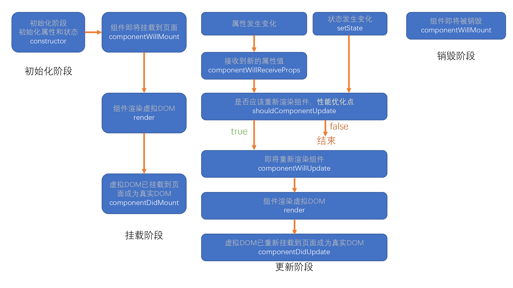
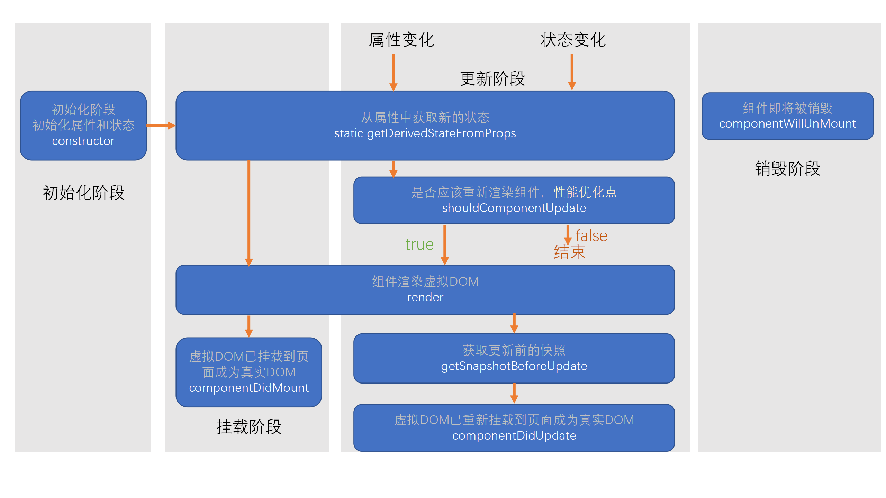
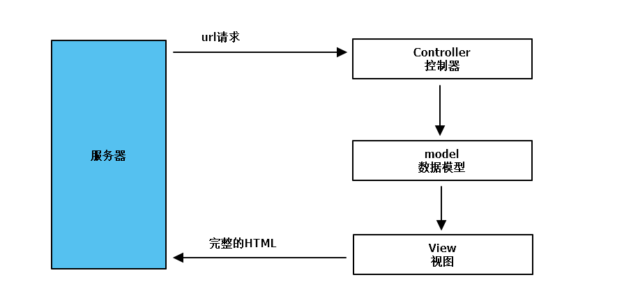
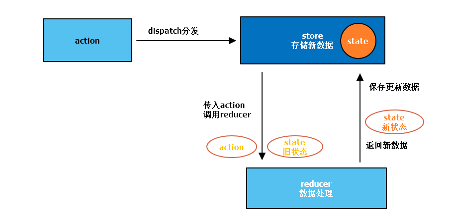
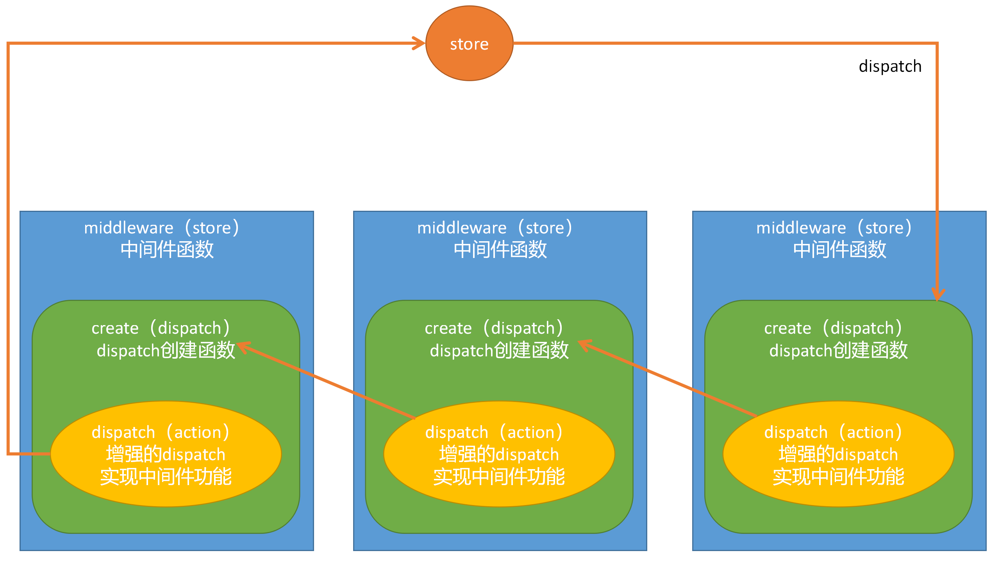
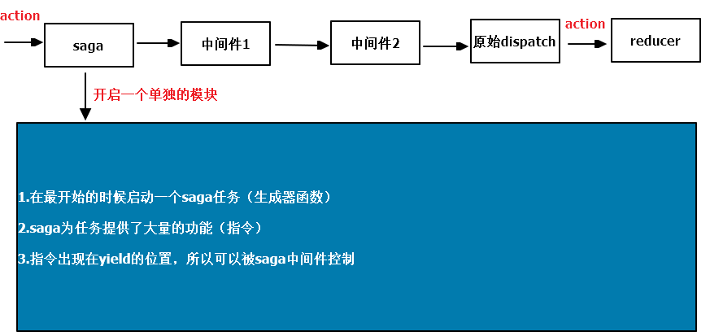

<!DOCTYPE html>
<html lang="en">

<head>
  <meta charset="utf-8" />
    
  <meta name="viewport" content="width=device-width, initial-scale=1, maximum-scale=1" />
  <title>
    react 应用篇 |  “鼠”于Huafu的“2”！
  </title>
  
  <link rel="shortcut icon" href="http://localhost:4000/blog/favicon.ico" />
  
  <link rel="stylesheet" href="/blog/css/style.css">
  <script src="/blog/js/pace.min.js"></script>

  

  

<link rel="alternate" href="/blog/atom.xml" title="“鼠”于Huafu的“2”！" type="application/atom+xml">
</head>

</html>

<body>
  <div id="app">
    <main class="content">
      <section class="outer">
  <article id="post-REACTa" class="article article-type-post" itemscope
  itemprop="blogPost" data-scroll-reveal>

  <div class="article-inner">
    
    <header class="article-header">
       
<h1 class="article-title sea-center" style="border-left:0" itemprop="name">
  react 应用篇
</h1>
  

    </header>
    

    
    <div class="article-meta">
      <a href="/blog/2020/11/09/REACTa/" class="article-date">
  <time datetime="2020-11-09T08:30:06.000Z" itemprop="datePublished">2020-11-09</time>
</a>
      
    </div>
    

    
    
    <div class="tocbot"></div>


    

    <div class="article-entry" itemprop="articleBody">
      


      

      
      <h1 id="一、开发环境"><a href="#一、开发环境" class="headerlink" title="一、开发环境"></a>一、开发环境</h1><h2 id="（一）浏览器"><a href="#（一）浏览器" class="headerlink" title="（一）浏览器"></a>（一）浏览器</h2><figure class="highlight html"><table><tr><td class="gutter"><pre><span class="line">1</span></pre></td><td class="code"><pre><span class="line"><span class="comment">&lt;!-- react --&gt;</span></span></pre></td></tr><tr><td class="gutter"><pre><span class="line">2</span></pre></td><td class="code"><pre><span class="line"><span class="tag">&lt;<span class="name">script</span> <span class="attr">crossorigin</span> <span class="attr">src</span>=<span class="string">"https://unpkg.com/react@16/umd/react.development.js"</span>&gt;</span><span class="tag">&lt;/<span class="name">script</span>&gt;</span></span></pre></td></tr><tr><td class="gutter"><pre><span class="line">3</span></pre></td><td class="code"><pre><span class="line"><span class="comment">&lt;!-- react-dom --&gt;</span></span></pre></td></tr><tr><td class="gutter"><pre><span class="line">4</span></pre></td><td class="code"><pre><span class="line"><span class="tag">&lt;<span class="name">script</span> <span class="attr">crossorigin</span> <span class="attr">src</span>=<span class="string">"https://unpkg.com/react-dom@16/umd/react-dom.development.js"</span>&gt;</span><span class="tag">&lt;/<span class="name">script</span>&gt;</span></span></pre></td></tr><tr><td class="gutter"><pre><span class="line">5</span></pre></td><td class="code"><pre><span class="line"><span class="comment">&lt;!-- babel --&gt;</span></span></pre></td></tr><tr><td class="gutter"><pre><span class="line">6</span></pre></td><td class="code"><pre><span class="line"><span class="tag">&lt;<span class="name">script</span> <span class="attr">src</span>=<span class="string">"https://unpkg.com/babel-standalone@6.15.0/babel.min.js"</span>&gt;</span><span class="tag">&lt;/<span class="name">script</span>&gt;</span></span></pre></td></tr><tr><td class="gutter"><pre><span class="line">7</span></pre></td><td class="code"><pre><span class="line"><span class="tag">&lt;<span class="name">script</span> <span class="attr">type</span>=<span class="string">"text/babel"</span>&gt;</span></span></pre></td></tr><tr><td class="gutter"><pre><span class="line">8</span></pre></td><td class="code"><pre><span class="line"><span class="actionscript"><span class="comment">// 使用jsx语法</span></span></span></pre></td></tr><tr><td class="gutter"><pre><span class="line">9</span></pre></td><td class="code"><pre><span class="line"><span class="tag">&lt;/<span class="name">script</span>&gt;</span></span></pre></td></tr></table></figure>

<h2 id="（二）脚手架"><a href="#（二）脚手架" class="headerlink" title="（二）脚手架"></a>（二）脚手架</h2><ul>
<li><p>使用npm安装并使用</p>
<blockquote>
<p>cnpm install -g create-react-app<br>create-react-app my-app<br>cd my-app/<br>npm start</p>
</blockquote>
</li>
<li><p>使用yarn安装并使用</p>
<blockquote>
<p>yarn create react-app projectName</p>
</blockquote>
</li>
</ul>
<h2 id="（三）辅助功能"><a href="#（三）辅助功能" class="headerlink" title="（三）辅助功能"></a>（三）辅助功能</h2><ul>
<li>使用vscode编辑器<ul>
<li>配置emmet.includeLanguages支持jsx语法</li>
</ul>
</li>
<li>使用vscode插件<ul>
<li>ESLint代码风格实时检查</li>
<li>ES7 React/Redux/GraphQL/React-Native snippets代码模板快速生成</li>
</ul>
</li>
<li>使用Chrome浏览器<ul>
<li>React Developer Tools调试工具</li>
<li>Redux DevTools调试工具</li>
</ul>
</li>
</ul>
<hr>
<h1 id="二、React-核心"><a href="#二、React-核心" class="headerlink" title="二、React 核心"></a>二、React 核心</h1><p><a href="https://zh-hans.reactjs.org/docs/react-api.html" target="_blank" rel="noopener">React</a></p>
<p><a href="https://zh-hans.reactjs.org/docs/react-dom.html" target="_blank" rel="noopener">React Dom</a></p>
<h2 id="（一）JSX语法"><a href="#（一）JSX语法" class="headerlink" title="（一）JSX语法"></a>（一）JSX语法</h2><h3 id="1-书写规范"><a href="#1-书写规范" class="headerlink" title="1.书写规范"></a>1.书写规范</h3><ul>
<li>JSX语法本质是React.createElement()语法糖，在使用jsx语法的地方必须引用React模块</li>
<li>jsx表达式建议放在（）内</li>
<li>jsx表达式有且只有一个根节点，期望使用多个根节点时可使用React.Fragment元素包裹（使用语法糖&lt;&gt;&lt;/&gt;）</li>
<li>jsx表达式中每个元素必须结束（遵循XML规范）</li>
</ul>
<h3 id="2-嵌入js表达式"><a href="#2-嵌入js表达式" class="headerlink" title="2.嵌入js表达式"></a>2.嵌入js表达式</h3><h4 id="（1）插入元素内容"><a href="#（1）插入元素内容" class="headerlink" title="（1）插入元素内容"></a>（1）插入元素内容</h4><ul>
<li>使用{}进行表达式插入，{}内支持js表达式<ul>
<li>支持React元素对象，不支持普通对象，普通对象不能作为子元素</li>
<li>支持数组，进行遍历数组，数组项会被作为子元素，如果数组项是元素需要绑定key属性，key属性不会反应到真实DOM</li>
</ul>
</li>
<li>{}内结果如果是null、undefined、false不会作为子元素</li>
<li>jsx注释{/*…*/}</li>
</ul>
<h4 id="（2）插入元素属性"><a href="#（2）插入元素属性" class="headerlink" title="（2）插入元素属性"></a>（2）插入元素属性</h4><ul>
<li>属性使用小驼峰命名</li>
<li>元素属性值可以使用{}插入js表达式</li>
<li>className属性并不支持一个数组</li>
<li>style属性支持一个普通对象，对应css样式</li>
<li>dangerouslySetInnerHTML属性需要一个对象，对象带有一个__html属性，属性值使用innerHtml设置<ul>
<li>jsx默认使用innerText设置内容</li>
<li>自动编码，防止注入攻击</li>
</ul>
</li>
</ul>
<h3 id="3-元素不可变"><a href="#3-元素不可变" class="headerlink" title="3.元素不可变"></a>3.元素不可变</h3><ul>
<li>本质是Object.freeze()冻结了对象</li>
<li>子元素及属性均只可读，不可写</li>
</ul>
<hr>
<h2 id="（二）组件"><a href="#（二）组件" class="headerlink" title="（二）组件"></a>（二）组件</h2><h3 id="1-内置组件"><a href="#1-内置组件" class="headerlink" title="1.内置组件"></a>1.内置组件</h3><ul>
<li>html元素</li>
<li>React.Fragment组件</li>
<li>React.createContext().Provider组件</li>
<li>React.createContext().Consumer组件</li>
<li>React.StrictMode组件（严格模式）<ul>
<li>不会参与UI渲染</li>
<li>识别不安全的生命周期</li>
<li>检测意外的副作用</li>
<li>检测过时API</li>
</ul>
</li>
</ul>
<hr>
<h3 id="2-函数组件"><a href="#2-函数组件" class="headerlink" title="2.函数组件"></a>2.函数组件</h3><h4 id="（1）参数"><a href="#（1）参数" class="headerlink" title="（1）参数"></a>（1）参数</h4><ul>
<li>组件属性对象props</li>
</ul>
<h4 id="（2）返回值"><a href="#（2）返回值" class="headerlink" title="（2）返回值"></a>（2）返回值</h4><ul>
<li>React元素</li>
</ul>
<h4 id="（3）HOOK"><a href="#（3）HOOK" class="headerlink" title="（3）HOOK"></a>（3）HOOK</h4><ul>
<li>React &gt;= 16.8.0版本新增</li>
</ul>
<hr>
<h3 id="3-类组件"><a href="#3-类组件" class="headerlink" title="3.类组件"></a>3.类组件</h3><h4 id="（1）继承"><a href="#（1）继承" class="headerlink" title="（1）继承"></a>（1）继承</h4><ul>
<li>React.Component</li>
</ul>
<h4 id="（2）render-方法"><a href="#（2）render-方法" class="headerlink" title="（2）render()方法"></a>（2）render()方法</h4><ul>
<li>返回React元素</li>
</ul>
<h4 id="（3）属性"><a href="#（3）属性" class="headerlink" title="（3）属性"></a>（3）属性</h4><ul>
<li>constructor(props)构造函数方法拿到属性对象</li>
<li>super(props)将属性对象传递给父类</li>
<li>组件内通过this.props即可使用属性对象</li>
</ul>
<h4 id="（4）状态"><a href="#（4）状态" class="headerlink" title="（4）状态"></a>（4）状态</h4><ul>
<li>组件自己维护的数据，本质是类组件的一个属性（一个对象）</li>
<li>状态初始化：<ul>
<li>constructor构造函数内初始化</li>
<li>class字段初始化</li>
</ul>
</li>
<li>状态的改变：<ul>
<li>状态不能直接改变，必须使用this.setState()</li>
<li>状态的改变可能是异步的，若处于html事件中，则是异步的，否则是同步的<ul>
<li>this.setState(obj)，接受一个对象，与this.state进行混合并重新渲染（Object.assign(this.state, obj)）</li>
<li>this.setState(func)，接受一个函数，该函数有一个参数prev代表上一次的状态对象，返回一个对象与之前的状态进行混合（该函数会异步执行）</li>
<li>this.setState(obj | func, callback)接受第二个参数是一个回调函数，该回调在所有状态改变完成，重新渲染之后运行，在回调中获取的是最新状态</li>
</ul>
</li>
<li>React会对异步的this.setState()进行优化，将多次状态进行合并，所有状态改变完成后统一对this.state进行改变，然后进行重新渲染</li>
</ul>
</li>
</ul>
<h4 id="（5）声生命周期"><a href="#（5）声生命周期" class="headerlink" title="（5）声生命周期"></a>（5）声生命周期</h4><ul>
<li><p><strong>React &lt; 16.0.0版本</strong></p>
</li>
<li><p>constrouctor()</p>
<ul>
<li>组件初始化</li>
<li>同一个组件对象只会创建一次</li>
<li>禁止使用setState()</li>
</ul>
</li>
<li><p>render()</p>
<ul>
<li>构建虚拟DOM树并渲染真实DOM节点</li>
<li>禁止使用setState()</li>
</ul>
</li>
<li><p>componentDidMount()</p>
<ul>
<li>组件挂在完成</li>
<li>可以使用setState()</li>
<li>常用于副作用处理（网络请求、启动计时器）</li>
</ul>
</li>
<li><p>shouldComponentUpdate()</p>
<ul>
<li>参数1：新属性</li>
<li>参数2：新状态</li>
<li>返回值：boolean，是否重新渲染</li>
<li>用于性能优化</li>
</ul>
</li>
<li><p>componentWillUnMount()</p>
<ul>
<li>组件卸载</li>
<li>用于销毁组件依赖资源（取消计时器）
</li>
</ul>
</li>
<li><p><strong>React &gt;= 16.0.0版本</strong></p>
</li>
<li><p>取消一些钩子函数：</p>
<ul>
<li>componentWillMount() 可能会有BUG</li>
<li>componentWillReceiveProps() 反模式问题</li>
<li>componentWillUpdate() 没有实际意义</li>
</ul>
</li>
<li><p>增加一些钩子函数：</p>
<ul>
<li>static getDerivedStateFromProps()<ul>
<li>静态函数，无法使用setState()</li>
<li>运行在初始化、属性变化、状态变化之后</li>
<li>参数1：新属性</li>
<li>参数2：新状态</li>
<li>返回值：Object，与状态进行混合</li>
</ul>
</li>
<li>getSnapshotBeforeUpdate()<ul>
<li>运行在DOM树构建完毕，页面即将渲染之前</li>
<li>参数1：旧属性</li>
<li>参数2：旧状态</li>
<li>返回值：componentDidUpdate()的第三个参数
</li>
</ul>
</li>
</ul>
</li>
</ul>
<hr>
<h3 id="4-表单"><a href="#4-表单" class="headerlink" title="4. 表单"></a>4. 表单</h3><ul>
<li>默认情况下表单是非受控组件<ul>
<li>可以使用 defaultValue、 defaultChecked属性指定默认值</li>
<li>使用ref来操作真实DOM间接获得组件内容</li>
</ul>
</li>
<li>通过指定内容和事件使得表单成为受控组件<ul>
<li>使用value指定组件内容（来源于状态）</li>
<li>使用onChange()事件改编组件内容（改编状态）</li>
</ul>
</li>
</ul>
<hr>
<h3 id="5-HOC高阶组件"><a href="#5-HOC高阶组件" class="headerlink" title="5.HOC高阶组件"></a>5.HOC高阶组件</h3><ul>
<li>高阶组件是函数组件（通常以with前缀命名）<ul>
<li>参数：接受一个组件</li>
<li>返回值：返回一个组件</li>
</ul>
</li>
<li>利用高阶组件实现横切关注点<ul>
<li>抽离共同的功能</li>
<li>添加额外功能</li>
</ul>
</li>
<li>注意：<ul>
<li>不要在render()中使用高阶组件，会导致组件对象被重复销毁和创建</li>
<li>不要在高阶组件内修改传入的组件</li>
</ul>
</li>
</ul>
<hr>
<h3 id="6-纯组件"><a href="#6-纯组件" class="headerlink" title="6.纯组件"></a>6.纯组件</h3><h4 id="（1）PureComponent类组件"><a href="#（1）PureComponent类组件" class="headerlink" title="（1）PureComponent类组件"></a>（1）PureComponent类组件</h4><ul>
<li>作用于类组件</li>
<li>一个组件，如果某个组件继承自它，该组件会被优化</li>
<li>状态和属性会进行浅比较，如果没有变化，则不会重新渲染</li>
<li>本质就是优化了shouldComponentUpdate()</li>
</ul>
<h4 id="（2）React-memo-高阶组件"><a href="#（2）React-memo-高阶组件" class="headerlink" title="（2）React.memo()高阶组件"></a>（2）React.memo()高阶组件</h4><ul>
<li>作用于函数组件</li>
<li>本质就是给函数组件包裹了一层类组件，类组件继承PureComponent</li>
</ul>
<hr>
<h3 id="7-Portals插槽"><a href="#7-Portals插槽" class="headerlink" title="7.Portals插槽"></a>7.Portals插槽</h3><ul>
<li>不改变虚拟DOM树结构的情况下，将React元素渲染到指定的真实DOM容器中</li>
<li>使用ReactDOM.createPortals(React元素，真实DOM)<ul>
<li>参数1：需要渲染的React元素</li>
<li>参数2：真实DOM容器</li>
<li>返回值：一个ReactPortals组件</li>
</ul>
</li>
<li>注意事件冒泡<ul>
<li>React中的事件是被包装过的</li>
<li>React中的事件冒泡是根据虚拟DOM树结构冒泡的，与真实DOM层次结构无关</li>
</ul>
</li>
</ul>
<hr>
<h2 id="（三）属性"><a href="#（三）属性" class="headerlink" title="（三）属性"></a>（三）属性</h2><h3 id="1-数据传递"><a href="#1-数据传递" class="headerlink" title="1.数据传递"></a>1.数据传递</h3><ul>
<li>组件内部数据来源于状态state</li>
<li>组件内部数据来源于属性props</li>
<li>组件内部数据来源于上下文Context</li>
<li>组件使用者通过属性向组件内部传递数据<ul>
<li>传递普通数据</li>
<li>传递自定义事件处理程序</li>
<li>传递子元素（props.children）语法糖可以直接向html一样书写子元素</li>
</ul>
</li>
<li>组件内通过自定义事件参数向外部使用者传递数据</li>
</ul>
<h3 id="2-事件"><a href="#2-事件" class="headerlink" title="2.事件"></a>2.事件</h3><h4 id="（1）定义"><a href="#（1）定义" class="headerlink" title="（1）定义"></a>（1）定义</h4><ul>
<li>React事件本质就是一个属性，属性值是一个函数，遵循小驼峰命名</li>
<li>内置组件的事件与html事件保持一致</li>
<li>自定义组件的事件就是一个属性，在组件内部合适的时候调用该方法</li>
<li>在事件处理程序中，如果没有特殊处理，this指向undefined<ul>
<li>使用bind绑定this</li>
<li>使用箭头函数（字段初始化）</li>
</ul>
</li>
</ul>
<h4 id="（2）React事件"><a href="#（2）React事件" class="headerlink" title="（2）React事件"></a>（2）React事件</h4><ul>
<li>研究对象：内置html组件的事件</li>
<li>事件委托：本质只给document注册事件，几乎所有元素的事件处理，均在document事件中进行<ul>
<li>对于不会冒泡的事件或某些元素独有的事件则是在DOM元素自身上进行监听的</li>
<li>当在document中监听到某个事件的时候，查看虚拟DOM树中哪些元素注册了此事件，按照虚拟DOM树冒泡的顺序依次执行</li>
<li>当给真实DOM和虚拟DOM注册事件的时候，无论DOM层次结构如何，真实DOM永远先运行，因为虚拟DOM事件要等冒泡到document时才会运行</li>
<li>如果给真实DOM注册事件并阻止了冒泡，会导致虚拟DOM中的事件无法运行</li>
<li>如果给虚拟DOM注册事件并阻止了冒泡，本质上阻止的是document的冒泡并标记该虚拟DOM，在循环运行事件的时候会忽略被标记的事件<ul>
<li>所以阻止不了真实DOM事件</li>
<li>阻止的是虚拟DOM树的冒泡</li>
</ul>
</li>
</ul>
</li>
<li>事件对象：React中的事件对象是合成事件对象<ul>
<li>如果要是用真实事件对象，通过e.nativeEvent获得</li>
<li>如果是用e.nativeEvent中的方法，已经发生在冒泡到document事件中，可能不会符合预期</li>
<li>React中事件对象会被重用<ul>
<li>在事件处理程序中不要异步使用事件对象，事件处理程序结束时该对象会被重置，准备给下一个事件处理程序使用</li>
<li>通过e.persist()方法对事件对象持久化</li>
</ul>
</li>
</ul>
</li>
</ul>
<h3 id="3-属性默认值"><a href="#3-属性默认值" class="headerlink" title="3.属性默认值"></a>3.属性默认值</h3><ul>
<li>通过静态属性 defaultProps指定属性默认值</li>
<li>函数组件：funcName.defaultProps = {}</li>
<li>类组件：static defaultProps = {}</li>
</ul>
<h3 id="4-属性类型检查"><a href="#4-属性类型检查" class="headerlink" title="4.属性类型检查"></a>4.属性类型检查</h3><ul>
<li>使用prop-types库和静态属性propTypes 定义检查规则<figure class="highlight js"><table><tr><td class="gutter"><pre><span class="line">1</span></pre></td><td class="code"><pre><span class="line"></span></pre></td></tr><tr><td class="gutter"><pre><span class="line">2</span></pre></td><td class="code"><pre><span class="line">PropTypes.any：<span class="comment">//任意类型</span></span></pre></td></tr><tr><td class="gutter"><pre><span class="line">3</span></pre></td><td class="code"><pre><span class="line">PropTypes.array：<span class="comment">//数组类型</span></span></pre></td></tr><tr><td class="gutter"><pre><span class="line">4</span></pre></td><td class="code"><pre><span class="line">PropTypes.bool：<span class="comment">//布尔类型</span></span></pre></td></tr><tr><td class="gutter"><pre><span class="line">5</span></pre></td><td class="code"><pre><span class="line">PropTypes.func：<span class="comment">//函数类型</span></span></pre></td></tr><tr><td class="gutter"><pre><span class="line">6</span></pre></td><td class="code"><pre><span class="line">PropTypes.number：<span class="comment">//数字类型</span></span></pre></td></tr><tr><td class="gutter"><pre><span class="line">7</span></pre></td><td class="code"><pre><span class="line">PropTypes.object：<span class="comment">//对象类型</span></span></pre></td></tr><tr><td class="gutter"><pre><span class="line">8</span></pre></td><td class="code"><pre><span class="line">PropTypes.string：<span class="comment">//字符串类型</span></span></pre></td></tr><tr><td class="gutter"><pre><span class="line">9</span></pre></td><td class="code"><pre><span class="line">PropTypes.symbol：<span class="comment">//符号类型</span></span></pre></td></tr><tr><td class="gutter"><pre><span class="line">10</span></pre></td><td class="code"><pre><span class="line"></span></pre></td></tr><tr><td class="gutter"><pre><span class="line">11</span></pre></td><td class="code"><pre><span class="line">PropTypes.node：<span class="comment">//任何可以被渲染的内容，字符串、数字、React元素</span></span></pre></td></tr><tr><td class="gutter"><pre><span class="line">12</span></pre></td><td class="code"><pre><span class="line">PropTypes.element：<span class="comment">//react元素</span></span></pre></td></tr><tr><td class="gutter"><pre><span class="line">13</span></pre></td><td class="code"><pre><span class="line">PropTypes.elementType：<span class="comment">//react元素类型</span></span></pre></td></tr><tr><td class="gutter"><pre><span class="line">14</span></pre></td><td class="code"><pre><span class="line">PropTypes.instanceOf(构造函数)：<span class="comment">//必须是指定构造函数的实例</span></span></pre></td></tr><tr><td class="gutter"><pre><span class="line">15</span></pre></td><td class="code"><pre><span class="line">PropTypes.oneOf([xxx, xxx])：<span class="comment">//枚举</span></span></pre></td></tr><tr><td class="gutter"><pre><span class="line">16</span></pre></td><td class="code"><pre><span class="line">PropTypes.oneOfType([xxx, xxx]);  <span class="comment">//属性类型必须是数组中的其中一个</span></span></pre></td></tr><tr><td class="gutter"><pre><span class="line">17</span></pre></td><td class="code"><pre><span class="line">PropTypes.arrayOf(PropTypes.XXX)：<span class="comment">//必须是某一类型组成的数组</span></span></pre></td></tr><tr><td class="gutter"><pre><span class="line">18</span></pre></td><td class="code"><pre><span class="line">PropTypes.objectOf(PropTypes.XXX)：<span class="comment">//对象由某一类型的值组成</span></span></pre></td></tr><tr><td class="gutter"><pre><span class="line">19</span></pre></td><td class="code"><pre><span class="line">PropTypes.shape(对象): <span class="comment">//属性必须是对象，并且满足指定的对象要求</span></span></pre></td></tr><tr><td class="gutter"><pre><span class="line">20</span></pre></td><td class="code"><pre><span class="line">PropTypes.exact(&#123;...&#125;)：<span class="comment">//对象必须精确匹配传递的数据</span></span></pre></td></tr><tr><td class="gutter"><pre><span class="line">21</span></pre></td><td class="code"><pre><span class="line"></span></pre></td></tr><tr><td class="gutter"><pre><span class="line">22</span></pre></td><td class="code"><pre><span class="line"><span class="comment">//自定义属性检查，如果有错误，返回错误对象即可</span></span></pre></td></tr><tr><td class="gutter"><pre><span class="line">23</span></pre></td><td class="code"><pre><span class="line">属性: <span class="function"><span class="keyword">function</span>(<span class="params">props, propName, componentName</span>) </span>&#123;</span></pre></td></tr><tr><td class="gutter"><pre><span class="line">24</span></pre></td><td class="code"><pre><span class="line">   <span class="comment">//...</span></span></pre></td></tr><tr><td class="gutter"><pre><span class="line">25</span></pre></td><td class="code"><pre><span class="line">&#125;</span></pre></td></tr></table></figure>
</li>
</ul>
<hr>
<h3 id="5-Ref"><a href="#5-Ref" class="headerlink" title="5.Ref"></a>5.Ref</h3><h4 id="（1）定义-1"><a href="#（1）定义-1" class="headerlink" title="（1）定义"></a>（1）定义</h4><ul>
<li>作用位置：<ul>
<li>作用于内置html元素：得到的是真实DOM元素</li>
<li>作用于类组件：得到的是组件实例对象</li>
<li>不能作用于函数组件</li>
</ul>
</li>
<li>作用形式：<ul>
<li>字符串：<ul>
<li>给组件定义一个ref属性，属性值为字符串str，代表该组件ref存储位置的变量名str</li>
<li>通过this.refs对象的str属性获取ref</li>
<li>不建议使用</li>
</ul>
</li>
<li>对象：<ul>
<li>通过React.createRef()创建一个对象obj，该对象本质就是一个普通对象，拥有一个current属性，属性值为null，给组件定义一个ref属性，属性值为该对象obj</li>
<li>通过传递的对象obj.current获得ref</li>
</ul>
</li>
<li>函数：<ul>
<li>给组件定义一个ref属性，属性值为一个函数func<ul>
<li>该函数会在componentDidMount()调用一次</li>
<li>如果给ref属性重新赋值一个新函数，则旧函数和新函数会在componentWillUpdate()之前分别调用一次</li>
<li>该函数会在componentWillUnMount()调用一次</li>
</ul>
</li>
<li>通过传递的函数func的第一个参数获得ref</li>
</ul>
</li>
</ul>
</li>
</ul>
<h4 id="（2）转发"><a href="#（2）转发" class="headerlink" title="（2）转发"></a>（2）转发</h4><ul>
<li>需求：不期望获得组件本身，而是获得组件内部的子元素</li>
<li>实现：使用高阶组件React.forwardRef()进行ref转发<ul>
<li>参数：接受一个函数组件funcComp</li>
<li>返回值：一个新函数组件newFuncComp<ul>
<li>给新组件newFuncComp定义ref</li>
<li>该ref会被高阶组件React.forwardRef()传递给被包装的组件funcComp的第二个参数</li>
<li>在组件funcComp内通过第二个参数获得ref，并自定义ref指向（或赋值或指向子元素ref）</li>
<li>若ref被指向子元素ref，高阶组件使用者就可以获得函数组件内部的子元素真实DOM或组件实例对象</li>
</ul>
</li>
</ul>
</li>
<li>拓展：<ul>
<li>不使用高阶组件React.forwardRef()也可以使用一个普通属性实现（只是不能定义为ref属性）</li>
<li>高阶组件React.forwardRef()不接受类组件，使用一个函数将其包装一下即可</li>
<li>对自定义高阶组件实现ref转发</li>
</ul>
</li>
</ul>
<hr>
<h3 id="6-render-Props"><a href="#6-render-Props" class="headerlink" title="6.render Props"></a>6.render Props</h3><ul>
<li>组件功能及其处理逻辑一致，只是显示有差异，则可以通过以下方法解决：<ul>
<li>HOC高阶组件提取功能</li>
<li>render props渲染属性<ul>
<li>给render属性传递一个函数，组件内部调用此函数<ul>
<li>函数参数为数据对象</li>
<li>函数返回值为渲染的内容</li>
</ul>
</li>
</ul>
</li>
</ul>
</li>
</ul>
<hr>
<h2 id="（四）上下文"><a href="#（四）上下文" class="headerlink" title="（四）上下文"></a>（四）上下文</h2><h3 id="1-特点"><a href="#1-特点" class="headerlink" title="1.特点"></a>1.特点</h3><ul>
<li>某个组件创建了上下文，上下文中的数据会被所有后代组件共享</li>
<li>某个组件依赖了上下文，该组件则不再纯粹（复用性变低，数据管理变复杂）</li>
<li>通常情况下，上下文用于第三方组件（通用组件）</li>
</ul>
<h3 id="2-React-lt-16-0-0版本"><a href="#2-React-lt-16-0-0版本" class="headerlink" title="2.React &lt; 16.0.0版本"></a>2.React &lt; 16.0.0版本</h3><h4 id="（1）创建"><a href="#（1）创建" class="headerlink" title="（1）创建"></a>（1）创建</h4><ul>
<li>只有类组件可以创建上下文</li>
<li>给类组件定义静态属性 static childContextTypes = {} 约束上下文中的数据类型</li>
<li>给类组件定义实例方法 getChildContext()<ul>
<li>该方法会在render()后被自动调用</li>
<li>方法返回值 Object, 定义上下文中的数据，必须满足类型约束</li>
</ul>
</li>
</ul>
<h4 id="（2）获取"><a href="#（2）获取" class="headerlink" title="（2）获取"></a>（2）获取</h4><ul>
<li>给组件定义静态属性 contextTypes = {} 声明并约束需要使用的数据和类型（通常提取类型约定childContextTypes和contextTypes必须保持一致）</li>
<li>在类组件构造函数constructor(props, context)中第二个参数即可获得上下文对象（该对象只包含声明过的数据，并非全部）<ul>
<li>将context交给super(props, context)</li>
<li>在组建内即可使用this.context获得上下文对象</li>
</ul>
</li>
<li>在函数组件中直接从第二个参数获得上下文对象</li>
</ul>
<h4 id="（3）改变"><a href="#（3）改变" class="headerlink" title="（3）改变"></a>（3）改变</h4><ul>
<li>上下文的改变不可以直接改变，源于状态和属性的改变而改变（状态和属性的改变则会重新渲染，渲染后getChildContext()会被自动调用，保持最新上下文）</li>
<li>若子组件使用者想实现改变上下文，通过上下文提供方法，子组件通过调用方法，让父组件创建者自己去改变数据</li>
</ul>
<h4 id="（4）多个上下文"><a href="#（4）多个上下文" class="headerlink" title="（4）多个上下文"></a>（4）多个上下文</h4><ul>
<li>组件不会从自身创建的上下文中去获取数据</li>
<li>组件获取是就近原则，从最近的上下文中优先获取</li>
</ul>
<h3 id="3-React-gt-16-0-0版本"><a href="#3-React-gt-16-0-0版本" class="headerlink" title="3.React &gt;= 16.0.0版本"></a>3.React &gt;= 16.0.0版本</h3><h4 id="（1）上下文是一个独立的对象，使用React-createContext-创建"><a href="#（1）上下文是一个独立的对象，使用React-createContext-创建" class="headerlink" title="（1）上下文是一个独立的对象，使用React.createContext()创建"></a>（1）上下文是一个独立的对象，使用React.createContext()创建</h4><ul>
<li>参数：Object, 默认值</li>
<li>返回值：Object, 上下文对象<ul>
<li><strong>Provider属性：生产者</strong><ul>
<li>一个组件，包裹上下文区域（包裹子元素）</li>
<li>创建上下文，该组件value属性给上下文赋予数据</li>
</ul>
</li>
<li><strong>Consumer属性：消费者</strong><ul>
<li>一个组件，当做子元素使用</li>
<li>该组件children属性值接受一个函数<ul>
<li>函数第一个参数即获得上下文对象</li>
<li>函数返回值会被渲染</li>
</ul>
</li>
</ul>
</li>
</ul>
</li>
</ul>
<h4 id="（2）多个上下文对应多个上下文对象"><a href="#（2）多个上下文对应多个上下文对象" class="headerlink" title="（2）多个上下文对应多个上下文对象"></a>（2）多个上下文对应多个上下文对象</h4><ul>
<li>Provider禁止复用，应重新React.createContext()创建</li>
<li>创建者和使用者应对应同一个上下文对象<ul>
<li>contextType == React.createContext()</li>
<li>context.Provider &lt;==&gt; context.Consumer</li>
</ul>
</li>
</ul>
<h4 id="（3）context-Provider的value属性发生变化会强制更新"><a href="#（3）context-Provider的value属性发生变化会强制更新" class="headerlink" title="（3）context.Provider的value属性发生变化会强制更新"></a>（3）context.Provider的value属性发生变化会强制更新</h4><ul>
<li>其包裹区域所有元素会被强制重新渲染，无论子元素是否使用上下文</li>
<li>无视性能优化，shouldComponentUpdate()不会被执行</li>
<li>value变化比较的是地址（Object.is()）</li>
<li>通过保持value属性值的引用不变而避免强制更新（优化性能）</li>
<li>在类组件中如果想实现手动强制刷新，调用this.forceUpdate()函数即可</li>
</ul>
<hr>
<h2 id="（五）错误与渲染"><a href="#（五）错误与渲染" class="headerlink" title="（五）错误与渲染"></a>（五）错误与渲染</h2><h3 id="1-错误边界（React-gt-16-0-0）"><a href="#1-错误边界（React-gt-16-0-0）" class="headerlink" title="1.错误边界（React &gt;= 16.0.0）"></a>1.错误边界（React &gt;= 16.0.0）</h3><ul>
<li>在React中，如果某个元素在渲染期间出现了错误，则整个组件树会被卸载</li>
<li>利用错误边界处理错误，自定义一个高阶组件，有能力捕获子元素在渲染期间发生的错误并阻止其继续传播<ul>
<li>方法1：编写静态生命周期函数 static getDerivedStateFromError()<ul>
<li>参数：错误对象</li>
<li>返回值：一个对象Object，该对象会与状态进行混合</li>
<li>触发条件：只有子组件在渲染期间发生错误，才会运行该函数</li>
<li>触发时间：在渲染子组件过程中，发生错误后，更新页面之前运行</li>
<li>处理错误：有机会预先通过状态来处理错误</li>
</ul>
</li>
<li>方法2：编写生命周期函数 componentDidCatch()<ul>
<li>参数1：错误对象</li>
<li>参数2：错误摘要</li>
<li>触发条件：只有子组件在渲染期间发生错误，才会运行该函数</li>
<li>触发时间：在渲染子组件过程中，发生错误后，更新页面之后运行（运行时间点靠后，如果改变状态，性能低下）</li>
<li>处理错误：在生命周期函数内改变状态，有机会预先通过状态来处理错误（通常只用于记录错误信息）</li>
</ul>
</li>
</ul>
</li>
</ul>
<hr>
<h3 id="2-节点创建与挂载"><a href="#2-节点创建与挂载" class="headerlink" title="2.节点创建与挂载"></a>2.节点创建与挂载</h3><ul>
<li>react元素：通过React.createElement()创建的对象</li>
<li>react节点：根据react元素创建用于渲染UI页面的对象</li>
<li>通过节点对象生成虚拟DOM树<ul>
<li>根据不同的节点类型做不同的事情</li>
<li>对于文本节点，关联React节点与真实文本节点</li>
<li>对于DOM节点，关联React节点与真实DOM节点，设置真实DOM的各种属性</li>
<li>对于类组件节点，关联React节点与实例对象，运行生命周期方法<ul>
<li>对render()返回的节点内容进行操作</li>
<li>将componentDidMount()加入执行队列</li>
</ul>
</li>
</ul>
</li>
<li>将生成的虚拟DOM树保存起来，供后续使用</li>
<li>将真实的DOM节点添加到容器中，然后运行执行队列（子组件的componentDidMount()会先运行）</li>
</ul>
<table>
<thead>
<tr>
<th align="left">react元素类型</th>
<th align="left">非react元素类型</th>
<th align="left">react节点类型</th>
<th align="left">react节点创建</th>
<th align="left">后续操作</th>
</tr>
</thead>
<tbody><tr>
<td align="left">string（内置组件）</td>
<td align="left">/</td>
<td align="left">DOM节点</td>
<td align="left">document.createElement()</td>
<td align="left">操作子元素</td>
</tr>
<tr>
<td align="left">function（函数组件）</td>
<td align="left">/</td>
<td align="left">组件节点</td>
<td align="left">调用函数得到节点内容</td>
<td align="left">操作节点内容</td>
</tr>
<tr>
<td align="left">class（类组件）</td>
<td align="left">/</td>
<td align="left">组件节点</td>
<td align="left">创建该类的实例对象</td>
<td align="left">运行生命周期</td>
</tr>
<tr>
<td align="left">/</td>
<td align="left">string（字符串）</td>
<td align="left">文本节点</td>
<td align="left">docuemnt.createTextNode()</td>
<td align="left">/</td>
</tr>
<tr>
<td align="left">/</td>
<td align="left">number（数字）</td>
<td align="left">文本节点</td>
<td align="left">docuemnt.createTextNode()</td>
<td align="left">/</td>
</tr>
<tr>
<td align="left">/</td>
<td align="left">boolean（布尔值）</td>
<td align="left">空节点</td>
<td align="left">占位</td>
<td align="left">/</td>
</tr>
<tr>
<td align="left">/</td>
<td align="left">null（空）</td>
<td align="left">空节点</td>
<td align="left">占位</td>
<td align="left">/</td>
</tr>
<tr>
<td align="left">/</td>
<td align="left">undefined（未定义）</td>
<td align="left">空节点</td>
<td align="left">占位</td>
<td align="left">/</td>
</tr>
<tr>
<td align="left">/</td>
<td align="left">array（数组）</td>
<td align="left">数组节点</td>
<td align="left">docuemnt.createDocumentFragment()</td>
<td align="left">操作数组项</td>
</tr>
</tbody></table>
<hr>
<h3 id="3-节点更新与卸载"><a href="#3-节点更新与卸载" class="headerlink" title="3.节点更新与卸载"></a>3.节点更新与卸载</h3><h4 id="（1）更新场景与流程："><a href="#（1）更新场景与流程：" class="headerlink" title="（1）更新场景与流程："></a>（1）更新场景与流程：</h4><ul>
<li>ReactDOM.render()根节点开始更新<ul>
<li>进入根节点的 <strong><font color=red>对比更新（diff）</font></strong></li>
</ul>
</li>
<li>setState()以该实例对象所在的组件节点为根节点的分支开始更新<ul>
<li>运行生命周期：static getDerivedStateFromProps()</li>
<li>运行生命周期：shouldComponentUpdate()<ul>
<li>返回值：false ==&gt; 结束</li>
<li>返回值：true ==&gt; 继续更新</li>
</ul>
</li>
<li>运行生命周期：render()<ul>
<li>得到一个新节点，进入新节点的 <strong><font color=red>对比更新（diff）</font></strong></li>
</ul>
</li>
<li>将生命周期加入队列：getSnapshotBeforeUpdate()</li>
<li>将生命周期加入队列：componentDidUpdate()</li>
</ul>
</li>
<li>更新虚拟DOM树</li>
<li>更新真实DOM</li>
<li>执行队列中的生命周期：componentDidMount()()</li>
<li>执行队列中的生命周期：getSnapshotBeforeUpdate()</li>
<li>执行队列中的生命周期：componentDidUpdate()</li>
<li>运行生命周期：componentWillUnMount()</li>
</ul>
<h4 id="（2）对比更新"><a href="#（2）对比更新" class="headerlink" title="（2）对比更新"></a>（2）对比更新</h4><ul>
<li>本质：将产生的新节点与之前虚拟DOM树中的节点进行对比，发现差异，完成更新</li>
<li>问题：与之前虚拟DOM树中的哪个节点对比？</li>
<li>假设：<ul>
<li>节点不会出现层次移动，利用树的深度直接定位层级</li>
<li>同一层级不同节点类型会生成不同的结构</li>
<li>同一层级相同节点类型的多个兄弟节点使用Key进行标识<ul>
<li>同一层级没有key，节点按照顺序对比</li>
<li>同一层级若有key，节点按key确定对比目标（key不同直接走没有对比目标）</li>
</ul>
</li>
</ul>
</li>
<li>结果：<ul>
<li>找到了对比目标，判断节点类型<ul>
<li>类型相同：针对类型做 <strong><font color=green>对应更新</font></strong></li>
<li>类型不同：<strong><font color=blue>卸载旧节点</font></strong>，创建新节点</li>
</ul>
</li>
<li>没有找到对比目标，判断节点的增减<ul>
<li>创建增加的节点，走创建流程</li>
<li>卸载多余的节点，走卸载流程</li>
</ul>
</li>
</ul>
</li>
</ul>
<h4 id="（3）对应更新"><a href="#（3）对应更新" class="headerlink" title="（3）对应更新"></a>（3）对应更新</h4><ul>
<li>若之前虚拟DOM树中React节点有关联真实DOM，则重用关联的真实DOM，记录变化的属性</li>
<li>若之前虚拟DOM树中React节点有关联实例对象，则重用关联的实例对象，运行生命周期方法</li>
<li>函数组件节点：直接调用函数，递归对比更新</li>
<li>空节点：不做任何事</li>
<li>数组节点：遍历数组，逐一递归对比更新</li>
</ul>
<h4 id="（4）卸载节点"><a href="#（4）卸载节点" class="headerlink" title="（4）卸载节点"></a>（4）卸载节点</h4><ul>
<li>先创建新节点，再卸载旧节点，然后挂载新节点</li>
<li>非类组件节点：直接放弃该节点，如果有子节点，递归卸载子节点</li>
<li>类组件节点：<ul>
<li>直接放弃该节点，如果有子节点，递归卸载子节点</li>
<li>运行声明周期：componentWillUnMount()</li>
<li>在卸载过程中componentWillUnMount()不会加入队列而是直接执行</li>
<li>先卸载当前节点再递归卸载子节点，当前节点componentWillUnMount()会先运行</li>
</ul>
</li>
<li>不同类型的节点会假设生成不同的结构<ul>
<li>父节点不同，整个分支会被卸载重建</li>
<li>子节点没有机会进行对比更新</li>
<li>应尽量不要去改变节点类型</li>
</ul>
</li>
<li>在虚拟DOM树中是按位置进行对比的<ul>
<li>节点在树中的位置变化直接影响对比对象会发生变化</li>
<li>应尽量利用样式控制节点的显示隐藏</li>
<li>应充分利用空节点保持结构的稳定</li>
</ul>
</li>
</ul>
<hr>
<h3 id="4-Profiler调试工具"><a href="#4-Profiler调试工具" class="headerlink" title="4.Profiler调试工具"></a>4.Profiler调试工具</h3><ul>
<li>可用于性能分析 </li>
</ul>
<hr>
<h2 id="（六）HOOK"><a href="#（六）HOOK" class="headerlink" title="（六）HOOK"></a>（六）HOOK</h2><h3 id="1-State-Hook"><a href="#1-State-Hook" class="headerlink" title="1.State Hook"></a>1.State Hook</h3><h4 id="（1）注册"><a href="#（1）注册" class="headerlink" title="（1）注册"></a>（1）注册</h4><ul>
<li>API：React.useState()</li>
<li>功能：为函数组件添加状态，只能在函数内部使用</li>
<li>参数：Any，状态默认值（默认undefined）</li>
<li>返回值：Array，一个长度为2的数组<ul>
<li>数组第一项：状态数据</li>
<li>数组第一项：状态改变方法</li>
</ul>
</li>
</ul>
<h4 id="（2）原理"><a href="#（2）原理" class="headerlink" title="（2）原理"></a>（2）原理</h4><ul>
<li>第一次创建节点的时候给组件节点创建一个状态表格</li>
<li>在第n次调用useState()，检查状态表格是否存在下标n<ul>
<li>不存在：使用默认值创建一个状态，加入状态表格，下标为n</li>
<li>若存在：忽略默认值，直接返回下标为n的状态</li>
</ul>
</li>
<li>每个组件的状态表格是独立的，互不影响</li>
<li>一个组件可有多个状态，状态应定义在函数体顶部，便于阅读</li>
<li>严禁在代码块（判断、循环）内定义，会导致状态对应紊乱</li>
<li>状态对应的改变方法的引用是固定的，节约内存空间</li>
<li>调用状态改变方法改变状态，状态数据不会混合，而是直接覆盖替换，建议对多个数据使用多个状态，分别管理</li>
<li>某些状态之间没有必然联系，应分化为不同的状态，而不要合在一起</li>
<li>状态发生改变，组件会被重现渲染，但是调用状态改变方法，若数据没有变化（Object.is(old, new)）不会导致重现渲染</li>
<li>如果要实现强制刷新，可使用默认值为空对象的状态改变方法 const [, forceUpdate] = useState({})</li>
<li>状态的改变可能是异步的，对状态改变方法传递一个函数，函数参数是上一次的状态且是可信任的</li>
</ul>
<hr>
<h3 id="2-Effect-Hook"><a href="#2-Effect-Hook" class="headerlink" title="2.Effect Hook"></a>2.Effect Hook</h3><h4 id="（1）注册-1"><a href="#（1）注册-1" class="headerlink" title="（1）注册"></a>（1）注册</h4><ul>
<li>API：<ul>
<li>React.useEffect()</li>
<li>React.useLayoutEffect()</li>
</ul>
</li>
<li>功能：为函数组件注册副作用处理函数，只能在函数内部使用</li>
<li>参数1：function，副作用处理函数<ul>
<li>参数：undefined，没有参数</li>
<li>返回值：function，清理函数</li>
</ul>
</li>
<li>参数2：Array，依赖项<ul>
<li>使用一个空数组作为依赖项，则副作用处理函数仅会在首次渲染时运行一次，清理函数仅会在组件销毁时运行一次</li>
</ul>
</li>
<li>返回值：undefined，没有返回值</li>
</ul>
<h4 id="（2）副作用处理函数"><a href="#（2）副作用处理函数" class="headerlink" title="（2）副作用处理函数"></a>（2）副作用处理函数</h4><ul>
<li>运行时间点：<ul>
<li>React.useEffect()：<ul>
<li>副作用处理函数在修改真实DOM之后，界面UI完成渲染之后异步运行</li>
<li>推荐使用React.useEffect()，不会导致页面渲染阻塞</li>
</ul>
</li>
<li>React.useLayoutEffect()：<ul>
<li>类组件生命周期方法在修改真实DOM之后，界面UI尚未渲染之前同步运行</li>
<li>与类组件中componentDidMount()、componentDidUpdate()一致</li>
</ul>
</li>
<li>如果注册了依赖项，只有依赖数据发生变化才会运行</li>
</ul>
</li>
<li>注册副作用处理函数与State类似<ul>
<li>严禁在代码块（判断、循环）内注册</li>
<li>一个组件可以注册多个副作用处理函数</li>
<li>多个副作用函数按照注册顺序依次执行</li>
</ul>
</li>
<li><font color=red>在副作用函数内使用了函数上下文中的数据，由于闭包影响，数据更新可能会非实时</font><ul>
<li>副作用处理函数是异步函数，函数内使用外部上下文中的数据状态会指向定义时的状态，而非调用时的状态</li>
<li>如果在定义到调用期间使用的数据状态发生了改变，则调用时的结果可能会不如预期</li>
</ul>
</li>
<li>副作用函数的重复注册执行的是覆盖，应保持副作用函数和清理函数的稳定</li>
</ul>
<h4 id="（3）清理函数"><a href="#（3）清理函数" class="headerlink" title="（3）清理函数"></a>（3）清理函数</h4><ul>
<li>副作用处理函数可以有返回值，返回一个函数，叫做清理函数</li>
<li>清理函数会在合适的时候被自动调用：<ul>
<li>组件首次渲染时不会运行</li>
<li>组件销毁时会运行</li>
<li>在每次副作用处理函数运行之前运行</li>
<li>如果注册了依赖项，只有在组件销毁时才会运行</li>
</ul>
</li>
</ul>
<hr>
<h3 id="3-自定义-Hook"><a href="#3-自定义-Hook" class="headerlink" title="3.自定义 Hook"></a>3.自定义 Hook</h3><ul>
<li>API：React.useHookName()</li>
<li>功能：使用一个函数提取封装通用Hook功能</li>
<li>语法：使用use前缀命名</li>
<li>优势：对比高阶组件和render Props<ul>
<li>用函数封装功能，使用和理解更容易</li>
<li>不会改变组件结构，没有复杂的嵌套结构</li>
<li>Hook可以进行自定义分化，将复杂的数据和功能拆分，横切关注点</li>
</ul>
</li>
</ul>
<h3 id="4-Context-Hook"><a href="#4-Context-Hook" class="headerlink" title="4.Context Hook"></a>4.Context Hook</h3><ul>
<li>API：React.useContext()</li>
<li>功能：用于获取上下文中的数据</li>
<li>目的：减少组件嵌套层次（替代Consumer）</li>
<li>参数：Object，上下文对象（React.createContext()的返回值）</li>
<li>返回值：Object，上下文中的数据（由上层最近的Provider的value决定）</li>
</ul>
<h3 id="5-Callback-Hook"><a href="#5-Callback-Hook" class="headerlink" title="5.Callback Hook"></a>5.Callback Hook</h3><ul>
<li>API：React.useCallback()</li>
<li>功能：用于固定函数引用（通常用于固定回调函数）</li>
<li>目的：用于优化组件事件（组件事件是一个属性，如若传递的函数引用不固定会导致组件重新渲染而浪费效率）</li>
<li>参数1：function，需要固定的函数</li>
<li>参数2：Array，依赖项</li>
<li>返回值：function，固定引用的函数<ul>
<li>只要依赖项没有变化，函数引用就不会改变</li>
<li>依赖项没有变化， useCallback()就会忽略参数，继续返回上一次的返回值 </li>
</ul>
</li>
</ul>
<h3 id="6-Memo-Hook"><a href="#6-Memo-Hook" class="headerlink" title="6.Memo Hook"></a>6.Memo Hook</h3><ul>
<li>API：React.useMemo()</li>
<li>功能：用于稳定处理函数的结果（通常用于稳定复杂计算的结果）</li>
<li>目的：用于优化性能</li>
<li>参数1：function，处理函数</li>
<li>参数2：Array，依赖项</li>
<li>返回值：Any，处理函数的返回值<ul>
<li>只要依赖项没有变化，处理函数就不会再次调用</li>
<li>依赖项没有变化， 处理函数的返回值作为useMemo()的返回值固定不变</li>
</ul>
</li>
<li>特点：比useCallback()更加强大：<ul>
<li>useCallback()只能固定函数</li>
<li>useMemo()可以固定任意类型的数据</li>
</ul>
</li>
</ul>
<h3 id="6-Ref-Hook"><a href="#6-Ref-Hook" class="headerlink" title="6.Ref Hook"></a>6.Ref Hook</h3><ul>
<li>API：React.useRef()</li>
<li>功能：用于创建一个不可变的ref对象（通常用于固定ref引用）</li>
<li>目的：在函数组件内代替React.cteateRef()</li>
<li>参数：Any，默认值对应ref对象中current属性的值</li>
<li>返回值：Object，ref对象{current: null}</li>
<li>特点：ref对象引用不可变，但是current属性值是可变的，可用于保存任何可变值</li>
</ul>
<hr>
<h3 id="7-Reducer-Hook"><a href="#7-Reducer-Hook" class="headerlink" title="7.Reducer Hook"></a>7.Reducer Hook</h3><h4 id="1-注册"><a href="#1-注册" class="headerlink" title="1.注册"></a>1.注册</h4><ul>
<li>API：React.useReducer()</li>
<li>功能：封装Flux数据流处理模式</li>
<li>目的：在组件内只分发action声明如何处理数据，而不关注数据处理逻辑和过程</li>
<li>参数1：function，数据处理函数reducer</li>
<li>参数2：Any，数据State默认值（如果注册了第三个参数，则该默认值会作为参数而非数据默认值）</li>
<li>参数3：function，数据State默认值处理函数<ul>
<li>参数：Any，注册的第二个参数</li>
<li>返回值：Any，数据State默认值</li>
</ul>
</li>
<li>返回值：Array，数据和action分发函数[state, dispatch]</li>
</ul>
<h4 id="2-原理"><a href="#2-原理" class="headerlink" title="2.原理"></a>2.原理</h4><ul>
<li>模式：遵从Flux数据流处理模式</li>
<li>数据：仓库数据或状态state</li>
<li>action: Object，数据处理描述对象<ul>
<li>type属性：声明数据处理方式（与reducer约定对应）</li>
<li>payload属性：附加数据</li>
</ul>
</li>
<li>reducer：function，数据处理逻辑<ul>
<li>参数1：Any，数据State</li>
<li>参数2：Object，action数据处理描述对象</li>
<li>返回值：处理后的数据</li>
</ul>
</li>
<li>dispatch：function，任务分发器<ul>
<li>参数：Object，action数据处理描述对象</li>
<li>函数体：<ul>
<li>调用reducer处理函数，将数据Stae和action传入</li>
<li>得到reducer处理结果，将结果作为数据改变就数据Stae状态</li>
</ul>
</li>
</ul>
</li>
<li>useReducer：function，封装函数<ul>
<li>创建一个状态State作为数据仓库，得到一个对应的状态修改方法setState()</li>
<li>状态默认值来源于参数传入</li>
<li>定义dispatch函数，在dispatch函数内实现数据状态的改变<ul>
<li>数据处理逻辑reducer()来源于参数传入</li>
<li>数据改变方法setState()来源于创建状态时对应的改变方法</li>
<li>新数据来源于数据处理函数reducer()的调用结果</li>
<li>给数据处理函数reducer()传递的数据仓库来源于创建的状态State</li>
<li>给数据处理函数reducer()传递的action来源于外部使用dispatch时分发的action</li>
</ul>
</li>
<li>返回一个数组：<ul>
<li>第一项：数据状态State</li>
<li>第二项：dispatch函数</li>
</ul>
</li>
</ul>
</li>
</ul>
<hr>
<h1 id="三、React-Transition-Group-动画"><a href="#三、React-Transition-Group-动画" class="headerlink" title="三、React Transition Group 动画"></a>三、React Transition Group 动画</h1><p><a href="https://reactcommunity.org/react-transition-group/" target="_blank" rel="noopener">React Transition Group文档 </a></p>
<blockquote>
<p>yarn add react-transition-group</p>
</blockquote>
<h2 id="（一）Transition"><a href="#（一）Transition" class="headerlink" title="（一）Transition"></a>（一）Transition</h2><h3 id="1-原理"><a href="#1-原理" class="headerlink" title="1.原理"></a>1.原理</h3><ul>
<li>默认情况下，Transition组件不会更改其渲染的组件的行为，它仅跟踪组件的“进入”和“退出”状态。</li>
<li>由您来赋予这些状态以意义和效果。</li>
<li>可以在组件进入或退出时为其添加样式。</li>
<li>初始状态：<ul>
<li>当in属性为false时，初始状态为exited</li>
<li>当in属性为true时，初始状态为entered</li>
</ul>
</li>
<li>进入状态：<ul>
<li>当in属性从false变化到true</li>
<li>立即执行默认状态exited</li>
<li>立即执行正在进入entering</li>
<li>延时timeout时间后，执行已完成进入entered</li>
</ul>
</li>
<li>退出状态：<ul>
<li>当in属性从true变化到false</li>
<li>立即执行默认状态entered</li>
<li>立即执行正在退出exiting</li>
<li>延时timeout时间后，执行已完成退出exited</li>
</ul>
</li>
</ul>
<h3 id="2-属性"><a href="#2-属性" class="headerlink" title="2.属性"></a>2.属性</h3><ul>
<li>in：boolean，用于决定状态</li>
<li>timeout：number，用于决定状态变化时长</li>
<li>mountOnEnter：boolean，是否延迟挂载子组件<ul>
<li>false：默认与父组件Transition同时挂载</li>
<li>true：当in指定为true时才会挂载</li>
</ul>
</li>
<li>unmountOnExit：boolean，是否在退出后卸载载子组件<ul>
<li>false：默认当状态为exited时，子组件依然挂载</li>
<li>true：当状态为exited时，子组件会被卸载</li>
</ul>
</li>
<li>appear：boolean，首次挂载是否应用过渡状态<ul>
<li>false：默认首次挂载组件没有应用过渡状态</li>
<li>true：在组件挂在后，会立即应用过渡状态</li>
</ul>
</li>
<li>其它属性</li>
<li>其它事件</li>
</ul>
<h3 id="3-状态"><a href="#3-状态" class="headerlink" title="3.状态"></a>3.状态</h3><ul>
<li>通过Transition组件的children使用一个函数，函数参数state获得实时状态<ul>
<li>‘entering’ 正在进入</li>
<li>‘entered’ 已完成进入</li>
<li>‘exiting’ 正在退出</li>
<li>‘exited’ 已完成退出</li>
</ul>
</li>
</ul>
<hr>
<h2 id="（二）CSSTransition"><a href="#（二）CSSTransition" class="headerlink" title="（二）CSSTransition"></a>（二）CSSTransition</h2><h3 id="1-原理-1"><a href="#1-原理-1" class="headerlink" title="1.原理"></a>1.原理</h3><ul>
<li>建立在Transition组件的基础上，完全继承了Transition组件的特性</li>
<li>将Transition组件过渡状态变化对应为CSSTransition根子元素设置className类</li>
<li>通过className类定义对应的类样式</li>
</ul>
<h3 id="2-属性-1"><a href="#2-属性-1" class="headerlink" title="2.属性"></a>2.属性</h3><ul>
<li>属性对应Transition组件</li>
<li>事件对应Transition组件</li>
</ul>
<h3 id="3-className类"><a href="#3-className类" class="headerlink" title="3.className类"></a>3.className类</h3><table>
<thead>
<tr>
<th align="left">Transition组件过渡状态</th>
<th align="left">CSSTransition根子元素类样式</th>
</tr>
</thead>
<tbody><tr>
<td align="left">‘entering’ 正在进入</td>
<td align="left">‘enter enter-active’</td>
</tr>
<tr>
<td align="left">‘entered’ 已完成进入</td>
<td align="left">‘enter-done’</td>
</tr>
<tr>
<td align="left">‘exiting’ 正在退出</td>
<td align="left">‘exit exit-active’</td>
</tr>
<tr>
<td align="left">‘exited’ 已完成退出</td>
<td align="left">‘exit-done’</td>
</tr>
<tr>
<td align="left">‘appear’ 首次挂载</td>
<td align="left">‘appear’</td>
</tr>
<tr>
<td align="left">‘appearing’ 首次挂载中</td>
<td align="left">‘appear appear-active’</td>
</tr>
<tr>
<td align="left">‘appeared’ 首次挂载完成</td>
<td align="left">‘appear-done enter-done’</td>
</tr>
</tbody></table>
<ul>
<li>当in属性从false变化为true时：<ul>
<li>立即添加类样式：enter（强制回流）</li>
<li>立即添加类样式：enter-active</li>
<li>延时timeout时间后，移除类样式enter、enter-active，添加类样式enter-done</li>
</ul>
</li>
<li>当in属性从true变化为false时：<ul>
<li>立即添加类样式：exit（强制回流）</li>
<li>立即添加类样式：exit-active</li>
<li>延时timeout时间后，移除类样式exit、exit-active，添加类样式exit-done</li>
</ul>
</li>
<li>使用classNames属性修改对应类样式名称<ul>
<li>字符串：添加前缀</li>
<li>对象：具体修改类样式名称</li>
</ul>
</li>
<li><a href="https://animate.style/" target="_blank" rel="noopener">与css动画库animate.css联用</a></li>
</ul>
<figure class="highlight js"><table><tr><td class="gutter"><pre><span class="line">1</span></pre></td><td class="code"><pre><span class="line">classNames=&#123;&#123;</span></pre></td></tr><tr><td class="gutter"><pre><span class="line">2</span></pre></td><td class="code"><pre><span class="line">   appear: <span class="string">'my-appear'</span>,</span></pre></td></tr><tr><td class="gutter"><pre><span class="line">3</span></pre></td><td class="code"><pre><span class="line">   appearActive: <span class="string">'my-active-appear'</span>,</span></pre></td></tr><tr><td class="gutter"><pre><span class="line">4</span></pre></td><td class="code"><pre><span class="line">   appearDone: <span class="string">'my-done-appear'</span>,</span></pre></td></tr><tr><td class="gutter"><pre><span class="line">5</span></pre></td><td class="code"><pre><span class="line">   enter: <span class="string">'my-enter'</span>,</span></pre></td></tr><tr><td class="gutter"><pre><span class="line">6</span></pre></td><td class="code"><pre><span class="line">   enterActive: <span class="string">'my-active-enter'</span>,</span></pre></td></tr><tr><td class="gutter"><pre><span class="line">7</span></pre></td><td class="code"><pre><span class="line">   enterDone: <span class="string">'my-done-enter'</span>,</span></pre></td></tr><tr><td class="gutter"><pre><span class="line">8</span></pre></td><td class="code"><pre><span class="line">   exit: <span class="string">'my-exit'</span>,</span></pre></td></tr><tr><td class="gutter"><pre><span class="line">9</span></pre></td><td class="code"><pre><span class="line">   exitActive: <span class="string">'my-active-exit'</span>,</span></pre></td></tr><tr><td class="gutter"><pre><span class="line">10</span></pre></td><td class="code"><pre><span class="line">   exitDone: <span class="string">'my-done-exit'</span>,</span></pre></td></tr><tr><td class="gutter"><pre><span class="line">11</span></pre></td><td class="code"><pre><span class="line">&#125;&#125;</span></pre></td></tr></table></figure>
<hr>
<h2 id="（三）SwitchTransition"><a href="#（三）SwitchTransition" class="headerlink" title="（三）SwitchTransition"></a>（三）SwitchTransition</h2><ul>
<li>children属性接受一个Transition或CSSTransition组件，主要实现有次序的切换<ul>
<li>Transition或CSSTransition组件不再使用in属性</li>
<li>Transition或CSSTransition组件使用key属性</li>
<li>控制Transition或CSSTransition组件根子元素的样式</li>
<li>当key值发生变化的时候，重现渲染Transition或CSSTransition组件根子元素（DOM元素）</li>
</ul>
</li>
<li>model属性控制切换模式<ul>
<li>out-in<ul>
<li>当key值发生变化的时候</li>
<li>为DOM元素添加退出样式exit、exit-active</li>
<li>退出完成后，将DOM元素移除</li>
<li>重现渲染DOM元素</li>
<li>为新DOM元素素添加进入样式enter、enter-active、enter-done</li>
</ul>
</li>
<li>in-out<ul>
<li>当key值发生变化的时候</li>
<li>重现渲染DOM元素（保留原DOM元素）</li>
<li>为DOM元素添加进入样式enter、enter-active、enter-done</li>
<li>为原DOM元素添加退出样式exit、exit-active</li>
<li>退出完成后，将原DOM元素移除</li>
</ul>
</li>
</ul>
</li>
</ul>
<hr>
<h2 id="（四）TransitionGroup"><a href="#（四）TransitionGroup" class="headerlink" title="（四）TransitionGroup"></a>（四）TransitionGroup</h2><ul>
<li>children属性接受多个Transition或CSSTransition组件，主要实现一组（列表）动画</li>
<li><a href="https://www.npmjs.com/package/uuid" target="_blank" rel="noopener">使用uuid定义唯一的key值</a></li>
<li>当一个DOM元素移除时会应用退出类样式</li>
<li>当一个DOM元素添加时会应用进入类样式</li>
<li>appear属性：可统一控制整个列表首次挂载应用进入样式</li>
<li>component属性：控制TransitionGroup在组件树中生成的结构<ul>
<li>默认生成一个div</li>
<li>字符串：指定生成的元素，例如“ul”</li>
<li>null：不生成任何元素</li>
</ul>
</li>
</ul>
<hr>
<h1 id="四、React-Router-路由"><a href="#四、React-Router-路由" class="headerlink" title="四、React Router 路由"></a>四、React Router 路由</h1><p><a href="http://react-guide.github.io/react-router-cn/index.html" target="_blank" rel="noopener">React Router</a></p>
<p><a href="https://github.com/ReactTraining/react-router/tree/master/packages/react-router-dom#installation" target="_blank" rel="noopener">React Router Dom</a></p>
<blockquote>
<p>yarn add react-router-dom</p>
</blockquote>
<h2 id="（一）概述"><a href="#（一）概述" class="headerlink" title="（一）概述"></a>（一）概述</h2><h3 id="1-单页面应用"><a href="#1-单页面应用" class="headerlink" title="1.单页面应用"></a>1.单页面应用</h3><ul>
<li>通常只是站点的一部分（某一个功能块）</li>
<li>路由：<ul>
<li>根据不同的页面地址，展示不同的组件</li>
<li>实现无刷新地址切换</li>
</ul>
</li>
</ul>
<h3 id="2-url地址"><a href="#2-url地址" class="headerlink" title="2.url地址"></a>2.url地址</h3><ul>
<li>协议名（schema）</li>
<li>主机名（host）<ul>
<li>IP地址</li>
<li>预设值：localhost</li>
<li>域名</li>
<li>局域网电脑名称</li>
</ul>
</li>
<li>端口号（port）<ul>
<li>http：默认80</li>
<li>https：默认443</li>
</ul>
</li>
<li>路径（path）</li>
<li>地址参数（search、query）</li>
<li>哈希、锚点（hash）</li>
</ul>
<h3 id="3-路由模式"><a href="#3-路由模式" class="headerlink" title="3.路由模式"></a>3.路由模式</h3><ul>
<li>Hash Router 哈希路由<ul>
<li>url地址中hash值的改变不会导致页面的属性</li>
<li>根据hash值来确定渲染的组件</li>
<li>使用location对象的hash属性获得hash值</li>
</ul>
</li>
<li>Browser History Router 浏览器历史记录路由<ul>
<li>history历史记录使用栈stack存储</li>
<li>html5新增history API使浏览器可以改变url地址而不刷新页面<ul>
<li>history.pushState(data, title, url)向历史记录栈中添加一条url记录</li>
<li>history.replaceState(data, title, url)将当前指向的url记录替换为指定的url记录</li>
</ul>
</li>
<li>根据页面路径来确定渲染的组件</li>
</ul>
</li>
</ul>
<hr>
<h2 id="（二）路由组件"><a href="#（二）路由组件" class="headerlink" title="（二）路由组件"></a>（二）路由组件</h2><h3 id="1-Router-模式组件"><a href="#1-Router-模式组件" class="headerlink" title="1.Router 模式组件"></a>1.Router 模式组件</h3><ul>
<li>HashRouter组件，哈希路由模式</li>
<li>BrowserRouter组件，浏览器历史记录路由模式<ul>
<li>Router组件<ul>
<li>Router.Provider组件，提供上下文支持<ul>
<li>value包含三个数据对象（仅组件内部使用，且是包装过的）<ul>
<li>history</li>
<li>location</li>
<li>match</li>
</ul>
</li>
</ul>
</li>
</ul>
</li>
<li>getUserConfirmation属性：function，阻塞器函数</li>
</ul>
</li>
</ul>
<h3 id="2-Route-规则组件"><a href="#2-Route-规则组件" class="headerlink" title="2.Route 规则组件"></a>2.Route 规则组件</h3><ul>
<li>Route组件，路由配置<ul>
<li>Router.Consumer组件，获得路由上下文<ul>
<li>Router.Provider组件，提供局部上下文</li>
</ul>
</li>
<li>path属性：<ul>
<li>string，匹配路径</li>
<li>string-pattern，匹配规则</li>
<li>array，一组匹配路径（匹配其一即可）</li>
<li>不配置path属性，任意匹配</li>
</ul>
</li>
<li>sensitive属性：boolean，是否区分大小写</li>
<li>exact属性：boolean，是否精确匹配</li>
<li>strict属性：boolean，是够严格匹配最后一个斜杠/</li>
<li>component属性：element，定义匹配后渲染的组件</li>
<li>render属性：function，定义匹配后运行的函数，渲染返回值</li>
<li>children属性<ul>
<li>React元素：只要当前Route进行了匹配，无论是否匹配成功，子元素都会渲染，并且会忽略component属性</li>
<li>function函数：<ul>
<li>参数：路由上下文</li>
<li>返回值：只要当前Route进行了匹配，无论是否匹配成功，返回值都会渲染，并且会忽略component属性</li>
</ul>
</li>
</ul>
</li>
</ul>
</li>
</ul>
<h3 id="3-功能组件"><a href="#3-功能组件" class="headerlink" title="3.功能组件"></a>3.功能组件</h3><ul>
<li><strong>Switch组件</strong>，控制一组Route组件，只要匹配到一个即停止匹配</li>
<li><strong>withRouter高阶组件</strong>，向非路由组件中注入路由信息</li>
<li><strong>Link组件</strong>，生成一个无刷新跳转的a元素<ul>
<li>to属性：<ul>
<li>string：路径</li>
<li>object：自定义location对象，会自动解析到地址栏</li>
</ul>
</li>
<li>replace属性：boolean，是否使用replace方式跳转</li>
<li>innerRef属性：DOM，对应内部真实a元素</li>
</ul>
</li>
<li><strong>NavLink组件</strong>，强化的Link组件，添加匹配时类样式<ul>
<li>activeClassName属性：string，自定义匹配时类样式（默认active）</li>
<li>activeStyle属性：object，匹配时行间样式</li>
</ul>
</li>
<li><strong>Redirect组件</strong>，强化的Link组件，重定向（当该组件运行时直接跳转至to属性定义的地址）<ul>
<li>to属性：路径</li>
<li>push属性：是否使用push方式跳转</li>
<li>from属性：跳转条件（当匹配到from属性时才进行跳转）</li>
</ul>
</li>
</ul>
<hr>
<h2 id="（三）路由信息"><a href="#（三）路由信息" class="headerlink" title="（三）路由信息"></a>（三）路由信息</h2><h3 id="1-创建"><a href="#1-创建" class="headerlink" title="1.创建"></a>1.创建</h3><ul>
<li>Router组件会创建上下文，并注入信息</li>
<li>Route组件也会创建上下文，并注入信息</li>
</ul>
<h3 id="2-获取"><a href="#2-获取" class="headerlink" title="2.获取"></a>2.获取</h3><ul>
<li>上下文对于开发者是不可用的</li>
<li>Route组件在匹配成功后，将上下文中的信息作为属性传递给对应的组件</li>
<li>通过组件属性获得对应的路由信息<ul>
<li>props.history</li>
<li>props.location</li>
<li>props.match</li>
</ul>
</li>
</ul>
<h3 id="3-history对象"><a href="#3-history对象" class="headerlink" title="3.history对象"></a>3.history对象</h3><ul>
<li><strong>实现无刷新地址跳转</strong></li>
<li>该对象是包装过的，不是原生的window.history对象<ul>
<li>如果直接使用原生history对象，则无法支持哈希路由模式</li>
<li>原生history对象方法使用时不会有任何通知，React无法知晓地址变化，不会重现渲染组件</li>
</ul>
</li>
<li>push方法：将新的地址入栈<ul>
<li>参数1：新路径</li>
<li>参数2：附加state数据<ul>
<li>通过history.location.state获取</li>
<li>此数据依赖跳转时手动附加，如果直接访问某个地址则无法拥有状态数据，所以数据通常附带在url地址中，而不是使用此处的附加state</li>
</ul>
</li>
</ul>
</li>
<li>replace方法：将新地址替换当前地址<ul>
<li>参数1：新路径</li>
<li>参数2：附加state数据</li>
</ul>
</li>
<li>go方法</li>
<li>forward方法</li>
<li>back方法</li>
<li>listen方法：监听器<ul>
<li>参数：function，当地址变化时调用该函数（即将跳转到新页面之前）<ul>
<li>参数1：location对象，当前地址信息</li>
<li>参数2：action字符串，进入地址方式<ul>
<li>“POP” ：浏览器前进后退、history.go()、history.goBack()、history.goForward()</li>
<li>“PUSH” ：history.push()</li>
<li>“REPLACE” ：history.replace()</li>
</ul>
</li>
</ul>
</li>
<li>返回值：function，调用此函数取消监听</li>
</ul>
</li>
<li>block()方法：阻塞器<ul>
<li>参数：阻塞提示信息<ul>
<li>string</li>
<li>function<ul>
<li>参数1：location对象</li>
<li>参数2：action类型</li>
<li>返回值：string</li>
</ul>
</li>
</ul>
</li>
<li>调用getUserConfirmation()<ul>
<li>参数1：string，阻塞提示信息</li>
<li>参数2：function，是否放行<ul>
<li>放行：调用并传递true</li>
<li>阻塞：调用并传递false</li>
</ul>
</li>
</ul>
</li>
<li>返回值：function，调用此函数取消阻塞</li>
</ul>
</li>
</ul>
<h3 id="4-location"><a href="#4-location" class="headerlink" title="4.location"></a>4.location</h3><ul>
<li><strong>地址栏信息</strong></li>
<li>与history.location是同一个对象</li>
<li>hash属性：哈希值</li>
<li>pathname属性：路径</li>
<li>search属性：search数据</li>
<li>state属性：附加状态数据</li>
<li><a href="https://github.com/sindresorhus/query-string#readme" target="_blank" rel="noopener">使用query-string库解析字符串</a></li>
</ul>
<h3 id="5-match"><a href="#5-match" class="headerlink" title="5.match"></a>5.match</h3><ul>
<li><strong>路由匹配信息</strong></li>
<li>path属性：匹配规则</li>
<li>url属性：真实url地址中匹配到的部分</li>
<li>isExact属性：是否是精确匹配（指的是匹配结果是否精确，而非匹配方式是否精确，与Route组件定义exact属性无关）</li>
<li>params属性：对应string-pattern匹配规则中的数据</li>
<li><a href="https://github.com/pillarjs/path-to-regexp#readme" target="_blank" rel="noopener">path-to-regexp库实现string-pattern匹配规则</a></li>
</ul>
<hr>
<h2 id="（四）路由应用"><a href="#（四）路由应用" class="headerlink" title="（四）路由应用"></a>（四）路由应用</h2><h3 id="1-嵌套路由"><a href="#1-嵌套路由" class="headerlink" title="1.嵌套路由"></a>1.嵌套路由</h3><ul>
<li>通过父组件传递的属性location.url简化内层路由path</li>
<li>使用配置对象简化路由path</li>
</ul>
<h3 id="2-权限保护"><a href="#2-权限保护" class="headerlink" title="2.权限保护"></a>2.权限保护</h3><ul>
<li>封装一个自定义路由ProtectedRoute，使用方法与Route一样</li>
<li>返回一个Route组件</li>
<li>将component、render、children除外的属性传递给Route</li>
<li>Route组件使用render函数</li>
<li>在函数内部进行授权处理<ul>
<li>有权，则render直接返回component进行渲染</li>
<li>无权，则使用Redirect组件进行重定向</li>
</ul>
</li>
<li>在Redirect组件进行重定向进行重定向的时候，附带当前地址</li>
<li>在完成登录后，获取附带数据中的地址进行跳回</li>
<li>如果附带数据中没有跳转地址，则直接跳转至某个页面（通常是首页）</li>
</ul>
<h3 id="3-导航守卫"><a href="#3-导航守卫" class="headerlink" title="3.导航守卫"></a>3.导航守卫</h3><ul>
<li>离开一个页面，进入另一个页面时，触发的事件</li>
<li>使用history.listen方法添加一个监听器<ul>
<li>参数：function，监听器函数<ul>
<li>监听器的参数可以获得新location信息和action类型</li>
<li>监听器外部history.location获得旧的location信息</li>
</ul>
</li>
<li>返回值：function，卸载一个监听器</li>
</ul>
</li>
<li>使用history.block()方法添加一个阻塞器<ul>
<li>传递阻塞提示信息</li>
<li>调用阻塞器函数，并传递msg阻塞消息和callback放行函数</li>
<li>调用放行函数，传递true放行，传递false阻塞</li>
</ul>
</li>
</ul>
<h3 id="4-路由动画"><a href="#4-路由动画" class="headerlink" title="4.路由动画"></a>4.路由动画</h3><h3 id="5-滚动条复位"><a href="#5-滚动条复位" class="headerlink" title="5.滚动条复位"></a>5.滚动条复位</h3><h3 id="6-阻止跳转"><a href="#6-阻止跳转" class="headerlink" title="6.阻止跳转"></a>6.阻止跳转</h3><hr>
<h1 id="五、Redux-数据管理"><a href="#五、Redux-数据管理" class="headerlink" title="五、Redux 数据管理"></a>五、Redux 数据管理</h1><p><a href="https://redux.js.org/api/api-reference" target="_blank" rel="noopener">redux官方文档</a></p>
<blockquote>
<p>yard add redux</p>
</blockquote>
<h2 id="（一）Redux-核心"><a href="#（一）Redux-核心" class="headerlink" title="（一）Redux 核心"></a>（一）Redux 核心</h2><h3 id="1-MVC解决方案"><a href="#1-MVC解决方案" class="headerlink" title="1.MVC解决方案"></a>1.MVC解决方案</h3><ul>
<li>它是一个UI的解决方案，用于降低UI复杂度，以及UI关联的数据复杂度</li>
<li><strong>传统的服务端MVC</strong><ul>
<li>服务端响应一个完整的HTML页面</li>
<li>该HTML中包含页面所需要的数据</li>
<li>浏览器仅仅承担渲染的作用</li>
</ul>
</li>
<li>Controller 处理请求，组装这次请求所需要的数据</li>
<li>Model 处理数据用于UI渲染的数据模型</li>
<li>View 试图，将数据模型组装到页面中</li>
<li><font color=red>不适用于前端（用户场景太多，控制太复杂）</font></li>
</ul>
<h3 id="2-FLUX解决方案"><a href="#2-FLUX解决方案" class="headerlink" title="2.FLUX解决方案"></a>2.FLUX解决方案</h3><ul>
<li>facebook提出的数据解决方案，他的最大历史意义在于它引入了action概念</li>
<li>action是一个普通的对象，用于描述干什么，action.type必须是一个String类型</li>
<li>store数据仓库，用于存储数据</li>
</ul>
<h3 id="3-Redux解决方案"><a href="#3-Redux解决方案" class="headerlink" title="3.Redux解决方案"></a>3.Redux解决方案</h3><ul>
<li>在flux基础上引入reducer</li>
<li>自定义reducer数据处理程序<ul>
<li>类型：function</li>
<li>参数1：旧state</li>
<li>参数2：action</li>
<li>返回值：新state</li>
</ul>
</li>
<li>自定义action数据处理描述<ul>
<li>类型：object</li>
<li>type属性：描述</li>
<li>payload属性：附带数据</li>
</ul>
</li>
<li>创建数据仓库store<ul>
<li>从redux引入createStore  </li>
<li>store = createStore(reducer, state)创建数据仓库</li>
</ul>
</li>
<li>分发action：store.dispatch(action)</li>
<li>获取数据：store.getState()</li>
</ul>
<h3 id="4-action"><a href="#4-action" class="headerlink" title="4.action"></a>4.action</h3><ul>
<li>action必须是一个plain-object(平面对象，它的<strong>proto</strong>指向Object.prototype)</li>
<li>action必须有一个type属性（any类型）<ul>
<li>大中型项目中避免硬编码, 可以使用type文件形式的样板代码</li>
</ul>
</li>
<li>action可以有一个payload属性（附加数据）</li>
<li>为了方便传递action，通常会使用action创建函数来创建action<ul>
<li>创建函数应该是一个无副作用的纯函数，该函数返回一个action对象</li>
</ul>
</li>
<li>为了方便利用action创建函数来分发，可以使用 bindActionCreators<ul>
<li>bindActionCreators用于增强action的功能，不仅可以创建action，并且在创建action后自动完成分发</li>
<li>bindActionCreators第一个参数接受一个对象，对象的属性对应action创建函数</li>
<li>bindActionCreators第二个参数接受一个dispatch，用于指定是哪一个用dispatch来完成分发</li>
<li>bindActionCreators返回一个对象，对象方法与接受的第一个参数对象相同，调用该对象的方法即完成使用对应的action进行分发</li>
</ul>
</li>
</ul>
<h3 id="5-reducer"><a href="#5-reducer" class="headerlink" title="5.reducer"></a>5.reducer</h3><ul>
<li>reducer必须为一个纯函数，用于处理对应的action触发时如何处理数据</li>
<li>reducer调用：<ul>
<li>store.dispatch分发的时候</li>
<li>createStore初始化仓库的时候</li>
<li>初始化仓库时可以不使用默认state，而是在reducer中给一个默认值</li>
</ul>
</li>
<li>reducer内部通常使用switch来判断action.type</li>
<li>通常一个工程只有一个store, 一个store只有一个reduce<ul>
<li>为了方便管理，通常将reducer放到单独的文件中</li>
<li>在大中型项目中，操作和结构都比较复杂，需要对reducer进行细分，每一个状态对应一个处理函数reducer</li>
<li>最用将细分的reducer进行合并，使用创建对象的形式执行处理函数，并单独传递对应的数据</li>
<li>combineReducers就是将多个细分的reducer进行合并成一个reducer，用于创建store<ul>
<li>combineReducers参数接受一个对象，对象属性对应细分的reducer</li>
<li>combineReducers返回一个最终的reducer</li>
</ul>
</li>
</ul>
</li>
</ul>
<h3 id="6-store"><a href="#6-store" class="headerlink" title="6.store"></a>6.store</h3><ul>
<li>通过createStore创建，用于保存数据</li>
<li>dispathch方法：分发action</li>
<li>getState方法：获取仓库数据</li>
<li>replaceReducer方法：替换数据处理程序reducer</li>
<li>subscribe方法：数据变化监听器（返回一个函数用于取消监听）</li>
</ul>
<h3 id="7-redux-actions"><a href="#7-redux-actions" class="headerlink" title="7.redux-actions"></a>7.redux-actions</h3><p><a href="https://redux-actions.js.org/" target="_blank" rel="noopener">redux-actions 官方文档</a></p>
<blockquote>
<p>yarn add redux-actions</p>
</blockquote>
<ul>
<li><p><strong>createAction方法</strong>：创建一个action创建函数</p>
<ul>
<li>参数1：action.type</li>
<li>参数2：payload处理函数<ul>
<li>参数：action创建函数传递的参数</li>
<li>返回值：payload的值</li>
</ul>
</li>
<li>返回值：一个对应的action创建函数</li>
</ul>
</li>
<li><p><strong>createActions方法</strong>：创建一组action创建函数</p>
<ul>
<li>参数：object，action描述对象<ul>
<li>属性名：action.type（遵循大写、下划线分割）</li>
<li>属性值：payload处理函数（不需要payload则设置为null）</li>
</ul>
</li>
<li>返回值：object，对应的action创建函数<ul>
<li>属性名：对应action创建函数名（转换为小驼峰命名）</li>
<li>属性值：对应action创建函数</li>
</ul>
</li>
</ul>
</li>
<li><p><strong>handleAction方法</strong>：创建处理单个action类型的reducer函数</p>
<ul>
<li>参数1：action.type（支持action创建函数名，重写了toString）</li>
<li>参数2：针对action.type匹配处理函数</li>
<li>参数3：state默认值</li>
</ul>
</li>
<li><p><strong>handleAction方法</strong>：创建处理多个action类型的reducer函数</p>
<ul>
<li>参数：object，映射规则<ul>
<li>属性名：action.type（遵循大写、下划线分割）</li>
<li>属性值：针对action.type匹配处理函数</li>
</ul>
</li>
<li>返回值：function，reducer处理函数</li>
</ul>
</li>
<li><p><strong>combineActions方法</strong>：用于配合createActions和handleActions，将多个action创建函数合并成一个，对应一个处理函数reducer</p>
<ul>
<li>参数：需要匹配的action创建函数</li>
<li>返回值：一个合并的函数</li>
</ul>
</li>
</ul>
<figure class="highlight js"><table><tr><td class="gutter"><pre><span class="line">1</span></pre></td><td class="code"><pre><span class="line"><span class="keyword">const</span> getActions = createActions(&#123;</span></pre></td></tr><tr><td class="gutter"><pre><span class="line">2</span></pre></td><td class="code"><pre><span class="line">  INCREASE: <span class="function"><span class="params">()</span> =&gt;</span> <span class="number">1</span>,</span></pre></td></tr><tr><td class="gutter"><pre><span class="line">3</span></pre></td><td class="code"><pre><span class="line">  DECREASE: <span class="function"><span class="params">()</span> =&gt;</span> <span class="number">-1</span>,</span></pre></td></tr><tr><td class="gutter"><pre><span class="line">4</span></pre></td><td class="code"><pre><span class="line">  ADD: <span class="function"><span class="params">n</span> =&gt;</span> n,</span></pre></td></tr><tr><td class="gutter"><pre><span class="line">5</span></pre></td><td class="code"><pre><span class="line">&#125;)</span></pre></td></tr><tr><td class="gutter"><pre><span class="line">6</span></pre></td><td class="code"><pre><span class="line"><span class="keyword">export</span> &#123;increase, decrease add&#125; = getActions</span></pre></td></tr><tr><td class="gutter"><pre><span class="line">7</span></pre></td><td class="code"><pre><span class="line"><span class="keyword">export</span> <span class="keyword">default</span> handleActions(&#123;</span></pre></td></tr><tr><td class="gutter"><pre><span class="line">8</span></pre></td><td class="code"><pre><span class="line">  [combineActions(increse, decrease, add)]: <span class="function">(<span class="params">state, &#123;type, payload&#125;</span>) =&gt;</span> state + payload</span></pre></td></tr><tr><td class="gutter"><pre><span class="line">9</span></pre></td><td class="code"><pre><span class="line">&#125;)</span></pre></td></tr></table></figure>
<hr>
<h2 id="（二）Middleware-中间件"><a href="#（二）Middleware-中间件" class="headerlink" title="（二）Middleware 中间件"></a>（二）Middleware 中间件</h2><h3 id="1-自定义中间件"><a href="#1-自定义中间件" class="headerlink" title="1.自定义中间件"></a>1.自定义中间件</h3><h4 id="（1）原理"><a href="#（1）原理" class="headerlink" title="（1）原理"></a>（1）原理</h4><ul>
<li>更改dispatch函数<figure class="highlight js"><table><tr><td class="gutter"><pre><span class="line">1</span></pre></td><td class="code"><pre><span class="line"><span class="keyword">const</span> store = createStore(reducer)</span></pre></td></tr><tr><td class="gutter"><pre><span class="line">2</span></pre></td><td class="code"><pre><span class="line"><span class="keyword">const</span> dispatch = store.dispatch</span></pre></td></tr><tr><td class="gutter"><pre><span class="line">3</span></pre></td><td class="code"><pre><span class="line"><span class="comment">//添加一个中间件1</span></span></pre></td></tr><tr><td class="gutter"><pre><span class="line">4</span></pre></td><td class="code"><pre><span class="line">store.dispatch = <span class="function">(<span class="params">action</span>) =&gt;</span> &#123;</span></pre></td></tr><tr><td class="gutter"><pre><span class="line">5</span></pre></td><td class="code"><pre><span class="line">  store.getState()<span class="comment">//旧数据</span></span></pre></td></tr><tr><td class="gutter"><pre><span class="line">6</span></pre></td><td class="code"><pre><span class="line">  action<span class="comment">//action</span></span></pre></td></tr><tr><td class="gutter"><pre><span class="line">7</span></pre></td><td class="code"><pre><span class="line">  dispatch()<span class="comment">//运行原有功能</span></span></pre></td></tr><tr><td class="gutter"><pre><span class="line">8</span></pre></td><td class="code"><pre><span class="line">  store.getState()<span class="comment">//新数据</span></span></pre></td></tr><tr><td class="gutter"><pre><span class="line">9</span></pre></td><td class="code"><pre><span class="line">&#125;</span></pre></td></tr><tr><td class="gutter"><pre><span class="line">10</span></pre></td><td class="code"><pre><span class="line"></span></pre></td></tr><tr><td class="gutter"><pre><span class="line">11</span></pre></td><td class="code"><pre><span class="line"><span class="comment">//添加一个中间件2</span></span></pre></td></tr><tr><td class="gutter"><pre><span class="line">12</span></pre></td><td class="code"><pre><span class="line">dispatch = store.dispatch</span></pre></td></tr><tr><td class="gutter"><pre><span class="line">13</span></pre></td><td class="code"><pre><span class="line">store.dispatch = <span class="function">(<span class="params">action</span>) =&gt;</span> &#123;</span></pre></td></tr><tr><td class="gutter"><pre><span class="line">14</span></pre></td><td class="code"><pre><span class="line">  <span class="comment">//中间件功能</span></span></pre></td></tr><tr><td class="gutter"><pre><span class="line">15</span></pre></td><td class="code"><pre><span class="line">  dispatch()<span class="comment">//运行中间件1</span></span></pre></td></tr><tr><td class="gutter"><pre><span class="line">16</span></pre></td><td class="code"><pre><span class="line">  <span class="comment">//中间件功能</span></span></pre></td></tr><tr><td class="gutter"><pre><span class="line">17</span></pre></td><td class="code"><pre><span class="line">&#125;</span></pre></td></tr></table></figure>
<h4 id="（2）中间件函数"><a href="#（2）中间件函数" class="headerlink" title="（2）中间件函数"></a>（2）中间件函数</h4></li>
<li>中间件是一个函数<ul>
<li>参数：store仓库</li>
<li>返回值：dispatch创建函数<figure class="highlight js"><table><tr><td class="gutter"><pre><span class="line">1</span></pre></td><td class="code"><pre><span class="line"><span class="keyword">const</span> store = createStore(reducer)</span></pre></td></tr><tr><td class="gutter"><pre><span class="line">2</span></pre></td><td class="code"><pre><span class="line"><span class="comment">//中间件1</span></span></pre></td></tr><tr><td class="gutter"><pre><span class="line">3</span></pre></td><td class="code"><pre><span class="line"><span class="function"><span class="keyword">function</span> <span class="title">middleware</span>(<span class="params">store</span>)</span>&#123;<span class="comment">//得到仓库</span></span></pre></td></tr><tr><td class="gutter"><pre><span class="line">4</span></pre></td><td class="code"><pre><span class="line">  <span class="keyword">return</span> <span class="function">(<span class="params">nextDispatch</span>) =&gt;</span> &#123;<span class="comment">//得到下一个中间件的dispatch</span></span></pre></td></tr><tr><td class="gutter"><pre><span class="line">5</span></pre></td><td class="code"><pre><span class="line">    <span class="keyword">return</span> <span class="function">(<span class="params">action</span>) =&gt;</span> &#123;<span class="comment">//得到action</span></span></pre></td></tr><tr><td class="gutter"><pre><span class="line">6</span></pre></td><td class="code"><pre><span class="line">      <span class="comment">//中间件功能</span></span></pre></td></tr><tr><td class="gutter"><pre><span class="line">7</span></pre></td><td class="code"><pre><span class="line">      nextDispatch(action)</span></pre></td></tr><tr><td class="gutter"><pre><span class="line">8</span></pre></td><td class="code"><pre><span class="line">      <span class="comment">//中间件功能</span></span></pre></td></tr><tr><td class="gutter"><pre><span class="line">9</span></pre></td><td class="code"><pre><span class="line">    &#125;</span></pre></td></tr><tr><td class="gutter"><pre><span class="line">10</span></pre></td><td class="code"><pre><span class="line">  &#125;</span></pre></td></tr><tr><td class="gutter"><pre><span class="line">11</span></pre></td><td class="code"><pre><span class="line">&#125;</span></pre></td></tr><tr><td class="gutter"><pre><span class="line">12</span></pre></td><td class="code"><pre><span class="line"></span></pre></td></tr><tr><td class="gutter"><pre><span class="line">13</span></pre></td><td class="code"><pre><span class="line"><span class="keyword">const</span> middleware = <span class="function"><span class="params">store</span> =&gt;</span> <span class="function"><span class="params">nextDispatch</span> =&gt;</span> <span class="function"><span class="params">action</span> =&gt;</span> &#123;</span></pre></td></tr><tr><td class="gutter"><pre><span class="line">14</span></pre></td><td class="code"><pre><span class="line">  <span class="comment">//中间件功能</span></span></pre></td></tr><tr><td class="gutter"><pre><span class="line">15</span></pre></td><td class="code"><pre><span class="line">  nextDispatch(action)</span></pre></td></tr><tr><td class="gutter"><pre><span class="line">16</span></pre></td><td class="code"><pre><span class="line">  <span class="comment">//中间件功能</span></span></pre></td></tr><tr><td class="gutter"><pre><span class="line">17</span></pre></td><td class="code"><pre><span class="line">&#125;</span></pre></td></tr></table></figure>

</li>
</ul>
</li>
</ul>
<h4 id="（3）applyMiddleWare-应用中间件函数"><a href="#（3）applyMiddleWare-应用中间件函数" class="headerlink" title="（3）applyMiddleWare() 应用中间件函数"></a>（3）applyMiddleWare() 应用中间件函数</h4><ul>
<li>参数：中间件函数</li>
<li>返回值：用作createStore(reducer, applyMiddleWare(中间件))的第二或第三个参数</li>
<li>应用的中间件会在创建store后运行
</li>
</ul>
<hr>
<h3 id="2-redux-logger-日志记录"><a href="#2-redux-logger-日志记录" class="headerlink" title="2.redux-logger 日志记录"></a>2.redux-logger 日志记录</h3><p><a href="https://github.com/LogRocket/redux-logger#readme" target="_blank" rel="noopener">redux-logger 日志记录</a></p>
<blockquote>
<p>yard add redux-logger</p>
</blockquote>
<ul>
<li>打印日志记录</li>
<li>createLogger支持自定义日志记录打印<ul>
<li>collapsed: 日志是否折叠</li>
<li>duration：是否打印时间</li>
<li>predicate: 自定义处理函数</li>
</ul>
</li>
<li>logger中间件应放置于最后</li>
</ul>
<h3 id="3-redux-thunk-副作用处理"><a href="#3-redux-thunk-副作用处理" class="headerlink" title="3.redux-thunk 副作用处理"></a>3.redux-thunk 副作用处理</h3><p><a href="https://github.com/reduxjs/redux-thunk/redux-logger#readme" target="_blank" rel="noopener">redux-thunk 副作用处理</a></p>
<blockquote>
<p>yard add redux-thunk</p>
</blockquote>
<ul>
<li>允许action是一个带有副作用的函数</li>
<li>当action是一个函数被分发时，thunk会阻止action继续向后提交<ul>
<li>thunk会向函数中传递三个参数<ul>
<li>dispatch：来自于store.dispatch</li>
<li>getState: 来自于store.getState</li>
<li>extra: 来自于注册thunk时传递的额外参数（withExtraArgument）</li>
</ul>
</li>
</ul>
</li>
<li>logger中间件应放置于最前</li>
</ul>
<h3 id="4-redux-promise-副作用处理"><a href="#4-redux-promise-副作用处理" class="headerlink" title="4.redux-promise 副作用处理"></a>4.redux-promise 副作用处理</h3><p><a href="https://github.com/redux-utilities/redux-promise" target="_blank" rel="noopener">redux-promise 副作用处理</a></p>
<blockquote>
<p>yard add redux-promise</p>
</blockquote>
<ul>
<li>允许action或action.payload是一个promise对象</li>
<li>当action是一个promise对象时，会等待promise完成，将promise结果作为action进行触发</li>
<li>当action.payload是一个promise对象时，会等待promise完成，将promise结果作为payload进行触发</li>
<li>promise中使用resolve来触发action</li>
</ul>
<h3 id="5-redux-saga-副作用处理"><a href="#5-redux-saga-副作用处理" class="headerlink" title="5.redux-saga 副作用处理"></a>5.redux-saga 副作用处理</h3><p><a href="https://redux-saga-in-chinese.js.org/" target="_blank" rel="noopener">redux-saga 副作用处理</a></p>
<blockquote>
<p>yard add redux-saga</p>
</blockquote>


<table>
<thead>
<tr>
<th align="left">saga指令</th>
<th align="left">指令功能</th>
<th align="left">指令参数</th>
<th align="left">yield结果</th>
<th align="left">是否阻塞</th>
<th align="left">特点</th>
</tr>
</thead>
<tbody><tr>
<td align="left">all()</td>
<td align="left">合并多个任务</td>
<td align="left">array：生成器集合</td>
<td align="left">/</td>
<td align="left">阻塞</td>
<td align="left">等待运行所有生成器运行结束</td>
</tr>
<tr>
<td align="left">race()</td>
<td align="left">多个任务竞赛</td>
<td align="left">array：生成器集合</td>
<td align="left">/</td>
<td align="left">阻塞</td>
<td align="left">等待第一个结束的生成器运行结束</td>
</tr>
<tr>
<td align="left">take()</td>
<td align="left">监听action触发</td>
<td align="left">action.type</td>
<td align="left">action对象</td>
<td align="left">阻塞</td>
<td align="left">只监听1次</td>
</tr>
<tr>
<td align="left">takeEvery()</td>
<td align="left">监听action触发</td>
<td align="left">action.type、callback处理程序</td>
<td align="left">/</td>
<td align="left">无阻塞</td>
<td align="left">持续监听，不断开启新任务</td>
</tr>
<tr>
<td align="left">takeLastest()</td>
<td align="left">监听action触发</td>
<td align="left">action.type、callback处理程序</td>
<td align="left">/</td>
<td align="left">无阻塞</td>
<td align="left">持续监听，自动取消之前的任务</td>
</tr>
<tr>
<td align="left">delay()</td>
<td align="left">延时</td>
<td align="left">number：timeout</td>
<td align="left">/</td>
<td align="left">阻塞</td>
<td align="left">/</td>
</tr>
<tr>
<td align="left">put()</td>
<td align="left">触发action</td>
<td align="left">object：action对象</td>
<td align="left">/</td>
<td align="left">无阻塞</td>
<td align="left">/</td>
</tr>
<tr>
<td align="left">select</td>
<td align="left">获取仓库数据state</td>
<td align="left">function：数据筛选函数</td>
<td align="left">仓库数据state</td>
<td align="left">无阻塞</td>
<td align="left">/</td>
</tr>
<tr>
<td align="left">call()</td>
<td align="left">调用异步函数</td>
<td align="left">异步函数、依赖参数</td>
<td align="left">函数调用结果</td>
<td align="left">可能阻塞</td>
<td align="left">如果是promise会阻塞</td>
</tr>
<tr>
<td align="left">apply()</td>
<td align="left">调用异步函数</td>
<td align="left">this指向、异步函数、依赖参数</td>
<td align="left">函数调用结果</td>
<td align="left">可能阻塞</td>
<td align="left">如果是promise会阻塞</td>
</tr>
<tr>
<td align="left">cps()</td>
<td align="left">调用异步函数</td>
<td align="left">异步函数、依赖参数</td>
<td align="left">函数调用结果</td>
<td align="left">可能阻塞</td>
<td align="left">针对回调模式的异步</td>
</tr>
<tr>
<td align="left">promise对象</td>
<td align="left">等待promise完成</td>
<td align="left">/</td>
<td align="left">promise结果</td>
<td align="left">阻塞</td>
<td align="left">不推荐，应统一使用指令</td>
</tr>
<tr>
<td align="left">fork()</td>
<td align="left">任务分支</td>
<td align="left">生成器函数</td>
<td align="left">Task对象</td>
<td align="left">无阻塞</td>
<td align="left">/</td>
</tr>
<tr>
<td align="left">cancel()</td>
<td align="left">取消一个或多个任务</td>
<td align="left">Task对象</td>
<td align="left">Task对象</td>
<td align="left">无阻塞</td>
<td align="left">/</td>
</tr>
<tr>
<td align="left">cancelled()</td>
<td align="left">当前任务是否被取消</td>
<td align="left">/</td>
<td align="left">boolean</td>
<td align="left">无阻塞</td>
<td align="left">/</td>
</tr>
</tbody></table>
<hr>
<h2 id="（三）React-Redux-连接redux和react"><a href="#（三）React-Redux-连接redux和react" class="headerlink" title="（三）React-Redux 连接redux和react"></a>（三）React-Redux 连接redux和react</h2><p><a href="https://www.redux.org.cn/docs/react-redux/" target="_blank" rel="noopener">连接redux和react</a></p>
<blockquote>
<p>yarn add react-redux</p>
</blockquote>
<h3 id="1-Provider组件"><a href="#1-Provider组件" class="headerlink" title="1.Provider组件"></a>1.Provider组件</h3><ul>
<li>将redux的store仓库放到一个上下文中</li>
<li>通过store属性提供store仓库</li>
</ul>
<h3 id="2-connect函数"><a href="#2-connect函数" class="headerlink" title="2.connect函数"></a>2.connect函数</h3><ul>
<li>参数1：属性映射函数 mapStateToProps<ul>
<li>参数：传入整个仓库数据state</li>
<li>返回值：映射的数据对象</li>
</ul>
</li>
<li>参数2：事件映射函数 mapDispatchToProps<ul>
<li>参数：会传入dispatch</li>
<li>返回值：映射的事件处理程序对象</li>
</ul>
</li>
<li>返回值：高阶组件<ul>
<li>参数：需要连接的展示组件</li>
<li>返回值：提供数据的容器组件</li>
</ul>
</li>
<li><strong>细节：</strong><ul>
<li>connect的前两个参数是可选的，不要相应映射的时候传递null</li>
<li>connect的第二个参数可以是一个对象，每个属性是一个action创建函数</li>
<li>connect的第二个参数默认不传递，那么链接的组件默认会得到一个dispatch属性，有能力去自己触发action</li>
<li>connnect的后两个参数是可选的，mergeProps用于将要传递的属性进一步处理，options用于配置自定义处理</li>
</ul>
</li>
</ul>
<h3 id="3-connectAdvanced"><a href="#3-connectAdvanced" class="headerlink" title="3.connectAdvanced"></a>3.connectAdvanced</h3><ul>
<li>用于统一处理需要传递的属性</li>
<li>参数：function<ul>
<li>参数：dispatch</li>
<li>返回值：function<ul>
<li>参数：state, props</li>
<li>返回值：object此对象的属性用于传递</li>
</ul>
</li>
</ul>
</li>
</ul>
<h3 id="4-createProvider"><a href="#4-createProvider" class="headerlink" title="4.createProvider"></a>4.createProvider</h3><ul>
<li>通过唯一的key创建一个上下文</li>
<li>通过connect中options的storeKey来确定要使用的上下文</li>
</ul>
<hr>
<h2 id="（四）Connected-React-Router-连接redux和react-router"><a href="#（四）Connected-React-Router-连接redux和react-router" class="headerlink" title="（四）Connected-React-Router 连接redux和react-router"></a>（四）Connected-React-Router 连接redux和react-router</h2><p><a href="https://github.com/supasate/connected-react-router#readme" target="_blank" rel="noopener">连接redux和react-router</a></p>
<blockquote>
<p>yarn add connected-react-router<br>yarn add history</p>
</blockquote>
<h3 id="1-connectRouter方法"><a href="#1-connectRouter方法" class="headerlink" title="1.connectRouter方法"></a>1.connectRouter方法</h3><ul>
<li>用于创建一个reducer</li>
<li>参数：需要一个history对象</li>
<li>返回值：一个reducer</li>
<li>在combineReducers中使用router对应connectRouter创建的reducer</li>
</ul>
<h3 id="2-routerMiddleware方法"><a href="#2-routerMiddleware方法" class="headerlink" title="2.routerMiddleware方法"></a>2.routerMiddleware方法</h3><ul>
<li>用于创建一个中间件</li>
<li>参数：需要一个history对象</li>
<li>返回值：一个Middleware</li>
<li>在applyMiddleware中使用率先使用此中间件（位于第一个）</li>
</ul>
<h3 id="3-ConectedRouter组件"><a href="#3-ConectedRouter组件" class="headerlink" title="3.ConectedRouter组件"></a>3.ConectedRouter组件</h3><ul>
<li>用于创建一个路由上下文</li>
<li>替代BrowserRouter和HashRouter</li>
<li>上下文中使用react-router路由跳转的时候会自动触发action</li>
<li>若使用Connected-React-Router中的跳转，则默认得到的是action创建函数<ul>
<li>push()：创建一个action</li>
<li>repalce()：创建一个action</li>
</ul>
</li>
<li>使用react-redux中connect进行链接<ul>
<li>通过事件映射dispatch触发action进行跳转</li>
</ul>
</li>
</ul>
<hr>
<h1 id="六、Dva-js"><a href="#六、Dva-js" class="headerlink" title="六、Dva-js"></a>六、Dva-js</h1>

<p><a href="https://dvajs.com/" target="_blank" rel="noopener">dva官方文档</a></p>
<blockquote>
<p>yarn add dva</p>
</blockquote>
<ul>
<li>整合：<ul>
<li>react</li>
<li>react-dom</li>
<li>redux</li>
<li>redux-saga</li>
<li>react-redux</li>
<li>connected-react-router</li>
</ul>
</li>
</ul>
<h3 id="1-配置部分-dvaObj"><a href="#1-配置部分-dvaObj" class="headerlink" title="1.配置部分 dvaObj"></a>1.配置部分 dvaObj</h3><ul>
<li>dva()创建一个dva对象<ul>
<li>参数：object<ul>
<li>history：配置history对象</li>
<li>initialState: 配置创建仓库时默认数据</li>
<li>onError: 全局错误捕捉函数，传递错误信息error和dispatch函数</li>
<li>onAction：配置中间件（中间件对象或数组）</li>
<li>onStateChange: 仓库数据状态变化监听函数，传递最新状态</li>
<li>onReducer: 传递一个reducer，返回一个reducer函数，在每个reducer即将运行前触发</li>
<li>onEffect: 默认effect包装函数替换方案</li>
<li>extraReducers：额外附加的reducer，一个对象，每个方法是一个reducer</li>
<li>extraEnhancers: 默认createStore方法的增强方案，一个数组，每一项是一个函数</li>
</ul>
</li>
</ul>
</li>
</ul>
<h3 id="2-组件部分-react"><a href="#2-组件部分-react" class="headerlink" title="2.组件部分 react"></a>2.组件部分 react</h3><ul>
<li>dvaObj.router()定义渲染内容<ul>
<li>参数：function<ul>
<li>参数1：dvaObj</li>
<li>参数2：history</li>
</ul>
</li>
<li>返回值：渲染内容</li>
</ul>
</li>
<li>dvaObj.start()定义项目启动<ul>
<li>参数：css选择器（document.querySelector）</li>
</ul>
</li>
</ul>
<h3 id="3-数据部分-redux"><a href="#3-数据部分-redux" class="headerlink" title="3.数据部分 redux"></a>3.数据部分 redux</h3><ul>
<li>dvaObj.model()定义渲染内容<ul>
<li>参数：object<ul>
<li>namespace</li>
<li>state</li>
<li>reducers</li>
<li>effects</li>
<li>subscriptions</li>
</ul>
</li>
</ul>
</li>
</ul>
<h3 id="4-路由部分-router"><a href="#4-路由部分-router" class="headerlink" title="4.路由部分 router"></a>4.路由部分 router</h3><ul>
<li>相关的导出路径 ‘dva/router’</li>
<li>默认完成connectRouter：传入history, 配置reducer</li>
<li>默认完成routerMiddleware：传入history, 配置redux中间件</li>
<li>自行处理ConnectedRouter：传入history, 配置router上下文<ul>
<li>在创建dva对象时配置history</li>
<li>在调用router时候，dva默认会给routerConfig函数传递dva对象和history对象</li>
<li>在使用routerRedux的ConnectedRouter组件替代BrowserRouter或HashRouter并传递一个history属性</li>
</ul>
</li>
</ul>
<h3 id="5-插件部分-use"><a href="#5-插件部分-use" class="headerlink" title="5.插件部分 use"></a>5.插件部分 use</h3><ul>
<li>dvaObj.use()使用插件</li>
</ul>
<hr>
<h1 id="七、Umi-js"><a href="#七、Umi-js" class="headerlink" title="七、Umi-js"></a>七、Umi-js</h1><p><a href="https://umijs.org/zh-CN" target="_blank" rel="noopener">umi.js官方文档</a></p>
<blockquote>
<p>yarn global add umi</p>
</blockquote>
<h2 id="（一）路由"><a href="#（一）路由" class="headerlink" title="（一）路由"></a>（一）路由</h2><h3 id="1-约定式路由"><a href="#1-约定式路由" class="headerlink" title="1.约定式路由"></a>1.约定式路由</h3><h4 id="（1）匹配"><a href="#（1）匹配" class="headerlink" title="（1）匹配"></a>（1）匹配</h4><ul>
<li>umi约定，使用文件名及文件路径匹配对应的路由</li>
<li>pages目录用于存放页面<ul>
<li>root/pages</li>
<li>root/src/pages</li>
</ul>
</li>
<li>嵌套路由：使用属性中的children来定义内容位置<ul>
<li>全局嵌套<ul>
<li>root/layouts/index.js</li>
<li>root/src/layout/index.js</li>
</ul>
</li>
<li>局部嵌套<ul>
<li>root/pages/_layout.js</li>
<li>root/src/pages/_layout.js</li>
</ul>
</li>
</ul>
</li>
<li>404路由：只有在生产模式启用<ul>
<li>root/pages/404.js</li>
<li>root/src/pages/404.js </li>
</ul>
</li>
<li>动态路由：使用$ + name对应string-pattern规则<ul>
<li>root/pages/$id.js</li>
<li>root/src/pages/$name/$id.js</li>
</ul>
</li>
</ul>
<h4 id="（2）跳转"><a href="#（2）跳转" class="headerlink" title="（2）跳转"></a>（2）跳转</h4><ul>
<li>链接跳转<blockquote>
<p>import Link from ‘umi/link’<br>import NavLink from ‘umi/navlink’</p>
</blockquote>
<ul>
<li>使用Link组件：相当于react-router-dom中Link</li>
<li>使用NavLink组件：相当于react-router-dom中NavLink</li>
</ul>
</li>
<li>代码跳转<blockquote>
<p>import router from ‘umi/router’ </p>
</blockquote>
<ul>
<li>使用router对象<ul>
<li>go方法</li>
<li>goBack方法</li>
<li>goForward方法</li>
<li>push方法</li>
<li>replace方法</li>
</ul>
</li>
</ul>
</li>
</ul>
<h4 id="（3）路由信息"><a href="#（3）路由信息" class="headerlink" title="（3）路由信息"></a>（3）路由信息</h4><ul>
<li>pages、layout目录下的组件：<ul>
<li>使用属性props来获得：<ul>
<li>match<ul>
<li>params属性对应string-pattern规则参数</li>
</ul>
</li>
<li>history</li>
<li>location<ul>
<li>query属性已经使用query-string封装成对象</li>
</ul>
</li>
<li>route</li>
</ul>
</li>
</ul>
</li>
<li>非pages、layout目录下的组件：<ul>
<li>使用withRouter高阶组件<blockquote>
<p>import withRouter from ‘umi/withRouter’</p>
</blockquote>
</li>
</ul>
</li>
</ul>
<h4 id="（4）额外属性配置"><a href="#（4）额外属性配置" class="headerlink" title="（4）额外属性配置"></a>（4）额外属性配置</h4><ul>
<li>使用文档注释：遵循YAML格式，且必须配置于最顶部</li>
<li>键值对格式：不使用引号，且冒号后严格使用空格</li>
<li>数组项使用-并缩进：不使用中括号，且严格使用空格缩进，不支持tab缩进</li>
</ul>
<h3 id="2-配置式路由"><a href="#2-配置式路由" class="headerlink" title="2.配置式路由"></a>2.配置式路由</h3><ul>
<li>优先级高于约定式（一旦配置，约定式全部失效）</li>
<li>配置根目录文件：（其中之一）<ul>
<li>root/.umirc.js</li>
<li>root/config/config.js</li>
</ul>
</li>
<li>配置文件默认导出一个对象，配置route属性，类型是一个数组<ul>
<li>每一项就是一条匹配规则，类型是一个对象<ul>
<li>path：匹配路径</li>
<li>exact：是否精确匹配，默认true</li>
<li>component：渲染组件路径，相对于pages</li>
<li>routes：路由嵌套，一个数组，配置子路由</li>
<li>Routes：预处理<ul>
<li>一个数组，数组项为预处理的高阶组件路径，相对于根目录</li>
<li>渲染第一项，如果使用了children属性：<ul>
<li>将component配置组件作为children属性，传递给数组最后一项</li>
<li>每一项倒序作为children属性依次向前传递，最终渲染第一项</li>
</ul>
</li>
</ul>
</li>
</ul>
</li>
</ul>
</li>
</ul>
<hr>
<h2 id="（二）数据"><a href="#（二）数据" class="headerlink" title="（二）数据"></a>（二）数据</h2><h3 id="1-dva管理redux数据"><a href="#1-dva管理redux数据" class="headerlink" title="1.dva管理redux数据"></a>1.dva管理redux数据</h3><blockquote>
<p>import {connect} from ‘umi’</p>
</blockquote>
<ul>
<li>全局定义：<ul>
<li>root/models/namespace.js</li>
<li>root/src/models/namespace.js</li>
</ul>
</li>
<li>局部定义<ul>
<li>root/pages/models/namespace.js</li>
<li>root/src/pages/models/namespace.js</li>
<li>root/src/pages/model.js</li>
</ul>
</li>
<li>文件名即为namespace</li>
</ul>
<h3 id="2-代理服务器解决开发中的跨域"><a href="#2-代理服务器解决开发中的跨域" class="headerlink" title="2.代理服务器解决开发中的跨域"></a>2.代理服务器解决开发中的跨域</h3><ul>
<li>配置.umirc.js文件中proxy对象<ul>
<li>属性名：访问的地址</li>
<li>属性值：object<ul>
<li>target：转发的地址</li>
<li>changeOrgin：是否修改源</li>
</ul>
</li>
</ul>
</li>
<li>让跨域发生在代理服务器与服务器中</li>
</ul>
<h3 id="3-协同开发中数据模拟"><a href="#3-协同开发中数据模拟" class="headerlink" title="3.协同开发中数据模拟"></a>3.协同开发中数据模拟</h3><ul>
<li>使用mock模块<ul>
<li>root/mock/data.js</li>
<li>root/src/pages/_mock.js</li>
</ul>
</li>
<li>默认导出一个对象<ul>
<li>属性名：string, method + url</li>
<li>属性值：any, 模拟数据</li>
</ul>
</li>
</ul>
<hr>
<h2 id="（三）样式"><a href="#（三）样式" class="headerlink" title="（三）样式"></a>（三）样式</h2><h3 id="1-组件私有样式"><a href="#1-组件私有样式" class="headerlink" title="1.组件私有样式"></a>1.组件私有样式</h3><ul>
<li>与组件同目录</li>
<li>导入css时，会通过css-mudle处理为一个对象，从对象属性获得类样式</li>
</ul>
<h3 id="2-局部样式"><a href="#2-局部样式" class="headerlink" title="2.局部样式"></a>2.局部样式</h3><ul>
<li>root/src/assets/css/style.css</li>
<li>导入css时，会通过css-mudle处理为一个对象，从对象属性获得类样式</li>
</ul>
<h3 id="3-全局样式"><a href="#3-全局样式" class="headerlink" title="3.全局样式"></a>3.全局样式</h3><ul>
<li>root/src/global.css</li>
<li>导入css时，不会会通过css-mudle处理，直接使用样式</li>
</ul>
<hr>
<h2 id="（四）配置"><a href="#（四）配置" class="headerlink" title="（四）配置"></a>（四）配置</h2><h2 id="（五）脚手架"><a href="#（五）脚手架" class="headerlink" title="（五）脚手架"></a>（五）脚手架</h2><blockquote>
<p>yarn create umi</p>
</blockquote>
<hr>
<h1 id="八、antDesign"><a href="#八、antDesign" class="headerlink" title="八、antDesign"></a>八、antDesign</h1><p><a href="https://ant.design/index-cn" target="_blank" rel="noopener">antDesign官方文档</a></p>

      
      <!-- 打赏 -->
      
        <div id="reward-btn">
          打赏
        </div>
        
    </div>
    <footer class="article-footer">
      <a data-url="https://huafuhub.github.io/blog/2020/11/09/REACTa/" data-id="ckhaccaeh000ty8w1aeba8t6q"
        class="article-share-link">分享</a>
      
    </footer>

  </div>

  
  
  <nav class="article-nav">
    
      <a href="/blog/2020/11/09/TYPESCRIPTa/" class="article-nav-link">
        <strong class="article-nav-caption">上一篇</strong>
        <div class="article-nav-title">
          
            typescript 应用篇
          
        </div>
      </a>
    
    
      <a href="/blog/2020/11/09/JWTa/" class="article-nav-link">
        <strong class="article-nav-caption">下一篇</strong>
        <div class="article-nav-title">JWT原理详解</div>
      </a>
    
  </nav>


  

  
  
<!-- valine评论 -->
<div id="vcomments-box">
    <div id="vcomments">
    </div>
</div>
<script src="//cdn1.lncld.net/static/js/3.0.4/av-min.js"></script>
<script src='https://cdn.jsdelivr.net/npm/valine@1.3.10/dist/Valine.min.js'></script>
<script>
    new Valine({
        el: '#vcomments',
        notify: false,
        verify: false,
        app_id: '',
        app_key: '',
        path: window.location.pathname,
        avatar: 'mp',
        placeholder: '给我的文章加点评论吧~',
        recordIP: true
    });
    const infoEle = document.querySelector('#vcomments .info');
    if (infoEle && infoEle.childNodes && infoEle.childNodes.length > 0) {
        infoEle.childNodes.forEach(function (item) {
            item.parentNode.removeChild(item);
        });
    }
</script>
<style>
    #vcomments-box {
        padding: 5px 30px;
    }

    @media screen and (max-width: 800px) {
        #vcomments-box {
            padding: 5px 0px;
        }
    }

    #vcomments-box #vcomments {
        background-color: #fff;
    }

    .v .vlist .vcard .vh {
        padding-right: 20px;
    }

    .v .vlist .vcard {
        padding-left: 10px;
    }
</style>

  

  
  
  

</article>
</section>
      <footer class="footer">
  <div class="outer">
    <ul class="list-inline">
      <li>
        &copy;
        2020
        Huafu Li
      </li>
      <li>
        
          Powered by
        
        
        <a href="https://hexo.io" target="_blank">Hexo</a> Theme <a href="https://github.com/Shen-Yu/hexo-theme-ayer" target="_blank">Ayer</a>
        
      </li>
    </ul>
    <ul class="list-inline">
      <li>
        
        
        <ul class="list-inline">
  <li>PV:<span id="busuanzi_value_page_pv"></span></li>
  <li>UV:<span id="busuanzi_value_site_uv"></span></li>
</ul>
        
      </li>
      <li>
        <!-- cnzz统计 -->
        
        <script type="text/javascript" src='https://s9.cnzz.com/z_stat.php?id=1278069914&amp;web_id=1278069914'></script>
        
      </li>
    </ul>
  </div>
</footer>
    <div class="to_top">
        <div class="totop" id="totop">
  <i class="ri-arrow-up-line"></i>
</div>
      </div>
    </main>
    
    <aside class="sidebar">
      
        <button class="navbar-toggle"></button>
<nav class="navbar">
  
  <div class="logo">
    <a href="/blog/"></a>
  </div>
  
  <ul class="nav nav-main">
    
    <li class="nav-item">
      <a class="nav-item-link" href="/blog/">主页</a>
    </li>
    
    <li class="nav-item">
      <a class="nav-item-link" href="/blog/archives">目录</a>
    </li>
    
    <li class="nav-item">
      <a class="nav-item-link" href="/blog/about">关于</a>
    </li>
    
    <li class="nav-item">
      <a class="nav-item-link" href="/blog/pictures">相册</a>
    </li>
    
  </ul>
</nav>
<nav class="navbar navbar-bottom">
  <ul class="nav">
    <li class="nav-item">
      
      <a class="nav-item-link nav-item-search"  title="Search">
        <i class="ri-search-line"></i>
      </a>
      
      
      <a class="nav-item-link" target="_blank" href="/blog/atom.xml" title="RSS Feed">
        <i class="ri-rss-line"></i>
      </a>
      
    </li>
  </ul>
</nav>
<div class="search-form-wrap">
  <div class="local-search local-search-plugin">
  <input type="search" id="local-search-input" class="local-search-input" placeholder="Search...">
  <div id="local-search-result" class="local-search-result"></div>
</div>
</div>
      </aside>
      <div id="mask"></div>

<!-- #reward -->
<div id="reward">
  <span class="close"><i class="ri-close-line"></i></span>
  <p class="reward-p"><i class="ri-cup-line"></i>请我喝杯咖啡吧~</p>
  <div class="reward-box">
    
    <div class="reward-item">
      
      <span class="reward-type">支付宝</span>
    </div>
    
    
    <div class="reward-item">
      
      <span class="reward-type">微信</span>
    </div>
    
  </div>
</div>
      <script src="/blog/js/jquery-2.0.3.min.js"></script>
<script src="/blog/js/jquery.justifiedGallery.min.js"></script>
<script src="/blog/js/lazyload.min.js"></script>
<script src="/blog/js/busuanzi-2.3.pure.min.js"></script>

  <script src="/blog/fancybox/jquery.fancybox.min.js"></script>


  <script src="/blog/js/tocbot.min.js"></script>
  <script>
    // Tocbot_v4.7.0  http://tscanlin.github.io/tocbot/
    tocbot.init({
      tocSelector: '.tocbot',
      contentSelector: '.article-entry',
      headingSelector: 'h1, h2, h3, h4, h5, h6',
      hasInnerContainers: true,
      scrollSmooth: true,
      positionFixedSelector: '.tocbot',
      positionFixedClass: 'is-position-fixed',
      fixedSidebarOffset: 'auto',
			onClick: (e) => {
      	document.getElementById(e.target.innerText).scrollIntoView()
      	return false;
    	}
    });
  </script>


<script>
  var ayerConfig = {
    mathjax: false
  }
</script>

<script src="/blog/js/ayer.js"></script>

<script src="https://cdn.jsdelivr.net/npm/jquery-modal@0.9.2/jquery.modal.min.js"></script>
<link rel="stylesheet" href="https://cdn.jsdelivr.net/npm/jquery-modal@0.9.2/jquery.modal.min.css">


<script type="text/javascript" src="https://js.users.51.la/20544303.js"></script>
  
  

  </div>
</body>

</html>